Between the ideaAnd the realityBetween the motionAnd the actFalls the Shadow– TS Eliot, The Hollow MenTry to leave out the part that readers tend to skip.– Elmore Leonard, 10 Rules for Writing
31 Network Simulations: ns-2¶
In previous chapters, especially 20 Dynamics of TCP, we have at times made simplifying assumptions about TCP Reno traffic. In the present chapter we will look at actual TCP behavior, through simulation, enabling us to explore the accuracy of some of these assumptions. The primary goal is to provide comparison between idealized TCP behavior and the often-messier real behavior; a secondary goal is perhaps to shed light on some of the issues involved in simulation. For example, in the discussion in 31.3 Two TCP Senders Competing of competition between TCP Reno connections with different RTTs, we address several technical issues that affect the relevance of simulation results.
Parts of this chapter may serve as a primer on using the ns-2 simulator, though a primer focused on the goal of illuminating some of the basic operation and theory of TCP through experimentation. However, some of the outcomes described may be of interest even to those not planning on designing their own simulations.
Simulation is frequently used in the literature when comparing different TCP flavors for effective throughput (for example, the graphs excerpted in 22.15 TCP CUBIC were created through simulation). An alternative to simulation, network emulation, involves running actual system networking software in a multi-node environment created through containerization or virtualization; we present this in 30 Mininet. An important advantage of simulation over emulation, however, is that as emulations get large and complex they also get bogged down, and it can be hard to distinguish results from artifacts.
We begin this chapter by looking at a single connection and analyzing how well the TCP sawtooth utilizes the bottleneck link. We then turn to competition between two TCP senders. The primary competition example here is between TCP Reno connections with different RTTs. This example allows us to explore the synchronized-loss hypothesis (20.3.4 Synchronized-Loss Hypothesis) and to introduce phase effects, transient queue overflows, and other unanticipated TCP behavior. We also introduce some elements of designing simulation experiments. The second example compares TCP Reno and TCP Vegas. We close with a straightforward example of a wireless simulation.
31.1 The ns-2 simulator¶
The tool used for much research-level network simulations is ns, for network simulator and originally developed at the Information Sciences Institute. The ns simulator grew out of the REAL simulator developed by Srinivasan Keshav [SK88]; later development work was done by the Network Research Group at the Lawrence Berkeley National Laboratory.
We will describe in this chapter the ns-2 simulator, hosted at www.isi.edu/nsnam/ns. There is now also an ns-3 simulator, available at www.nsnam.org. Because ns-3 is not backwards-compatible with ns-2 and the programming interface has changed considerably, we take the position that ns-3 is an entirely different package, though one likely someday to supercede ns-2 entirely. While there is a short introduction to ns-3 in this book (32 The ns-3 Network Simulator), its use is arguably quite a bit more complicated for beginners, and the particular simulation examples presented below are well-suited to ns-2. While ns-3 supports more complex and realistic modeling, and is the tool of choice for serious research, this added complexity comes at a price in terms of configuration and programming. The standard ns-2 tracefile format is also quite easy to work with using informal scripting.
Research-level use of ns-2 often involves building new modules in C++, and compiling them in to the system. For our purposes here, the stock ns-2 distribution is sufficient. The simplest way to install ns-2 is probably with the “allinone” distribution, which does still require compiling but comes with a very simple install script. (As of 2014, the ns-allinone-2.35 version appeared to compile only with gcc/g++ no more recent than version 4.6.)
The native environment for ns-2 (and ns-3) is Linux. Perhaps the simplest approach for Windows users is to install a Linux virtual machine, and then install ns-2 under that. It is also possible to compile ns-2 under the Cygwin system; an older version of ns-2 may still be available as a Cygwin binary.
To create an ns-2 simulation, we need to do the following (in addition to a modest amount of standard housekeeping).
- define the network topology, including all nodes, links and router queuing rules
- create some TCP (or UDP) connections, called Agents, and attach them to nodes
- create some Applications – usually FTP for bulk transfer or telnet for intermittent random packet generation – and attach them to the agents
- start the simulation
Once started, the simulation runs for the designated amount of time, driven by the packets generated by the Application objects. As the simulated applications generate packets for transmission, the ns-2 system calculates when these packets arrive and depart from each node, and generates simulated acknowledgment packets as appropriate. Unless delays are explicitly introduced, node responses – such as forwarding a packet or sending an ACK – are instantaneous. That is, if a node begins sending a simulated packet from node N1 to N2 at time T=1.000 over a link with bandwidth 60 ms per packet and with propagation delay 200 ms, then at time T=1.260 N2 will have received the packet. N2 will then respond at that same instant, if a response is indicated, eg by enqueuing the packet or by forwarding it if the queue is empty.
Ns-2 does not necessarily require assigning IP addresses to every node, though this is possible in more elaborate simulations.
Advanced use of ns-2 (and ns-3) often involves the introduction of randomization; for example, we will in 31.3 Two TCP Senders Competing introduce both random sliding-windows delays and traffic generators that release packets at random times. While it is possible to seed the random-number generator so that different runs of the same experiment yield different outcomes, we will not do this here, so the random-number generator will always produce the same sequence. A consequence is that the same ns-2 script should yield exactly the same result each time it is run.
31.1.1 Using ns-2¶
The scripting interface for ns-2 uses the language Tcl, pronounced “tickle”; more precisely it is object-Tcl, or OTcl. For simple use, learning the general Tcl syntax is not necessary; one can proceed quite successfully by modifying standard examples.
The network simulation is defined in a Tcl file, perhaps sim.tcl; to run the simulation one then runs the command
ns sim.tcl
The result of running the ns-2 simulation will be to create some files, and perhaps print some output. The most common files created are the ns-2 trace file – perhaps sim.tr – which contains a record for every packet arrival, departure and queue event, and a file sim.nam for the network animator, nam, that allows visual display of the packets in motion (the ns-3 version of nam is known as NetAnim). The sliding-windows video in 8.2 Sliding Windows was created with nam.
Within Tcl, variables can be assigned using the set command. Expressions in [ ... ] are evaluated. Numeric expressions must also use the expr command:
set foo [expr $foo + 1]
As in unix-style shell scripting, the value of a variable X is $X; the name X (without the $) is used when setting the value (in Perl and PHP, on the other hand, many variable names begin with $, which is included both when evaluating and setting the variable). Comments are on lines beginning with the ‘#’ character. Comments can not be appended to a line that contains a statement (although it is possible first to start a new logical line with ;).
Objects in the simulation are generally created using built-in constructors; the constructor in the line below is the part in the square brackets (recall that the brackets must enclose an expression to be evaluated):
set tcp0 [new Agent/TCP/Reno]
Object attributes can then be assigned values; for example, the following sets the data portion of the packets in TCP connection tcp0 to 960 bytes:
$tcp0 set packetSize_ 960
Object attributes are retrieved using set without a value; the following assigns variable ack0 the current value of the ack_ field of tcp0:
set ack0 [$tcp0 set ack_]
The goodput of a TCP connection is, properly, the number of application bytes received. This differs from the throughput – the total bytes sent – in two ways: the latter includes both packet headers and retransmitted packets. The ack0 value above includes no retransmissions; we will occasionally refer to it as “goodput” in this sense.
31.2 A Single TCP Sender¶
For our first script we demonstrate a single sender sending through a router. Here is the topology we will build, with the delays and bandwidths:
The smaller bandwidth on the R–B link makes it the bottleneck. The default TCP packet size in ns-2 is 1000 bytes, so the bottleneck bandwidth is nominally 100 packets/sec or 0.1 packets/ms. The bandwidth×RTTnoLoad product is 0.1 packets/ms × 120 ms = 12 packets. Actually, the default size of 1000 bytes refers to the data segment, and there are an additional 40 bytes of TCP and IP header. We therefore set packetSize_ to 960 so the actual transmitted size is 1000 bytes; this makes the bottleneck bandwidth exactly 100 packets/sec.
We want the router R to have a queue capacity of 6 packets, plus the one currently being transmitted; we set queue-limit = 7 for this. We create a TCP connection between A and B, create an ftp sender on top that, and run the simulation for 20 seconds. The nodes A, B and R are named; the links are not.
The ns-2 default maximum window size is 20; we increase that to 100 with $tcp0 set window_ 100; otherwise we will see an artificial cap on the cwnd growth (in the next section we will increase this to 65000).
The script itself is in a file basic1.tcl, with the 1 here signifying a single sender.
# basic1.tcl simulation: A---R---B
#Create a simulator object
set ns [new Simulator]
#Open the nam file basic1.nam and the variable-trace file basic1.tr
set namfile [open basic1.nam w]
$ns namtrace-all $namfile
set tracefile [open basic1.tr w]
$ns trace-all $tracefile
#Define a 'finish' procedure
proc finish {} {
global ns namfile tracefile
$ns flush-trace
close $namfile
close $tracefile
exit 0
}
#Create the network nodes
set A [$ns node]
set R [$ns node]
set B [$ns node]
#Create a duplex link between the nodes
$ns duplex-link $A $R 10Mb 10ms DropTail
$ns duplex-link $R $B 800Kb 50ms DropTail
# The queue size at $R is to be 7, including the packet being sent
$ns queue-limit $R $B 7
# some hints for nam
# color packets of flow 0 red
$ns color 0 Red
$ns duplex-link-op $A $R orient right
$ns duplex-link-op $R $B orient right
$ns duplex-link-op $R $B queuePos 0.5
# Create a TCP sending agent and attach it to A
set tcp0 [new Agent/TCP/Reno]
# We make our one-and-only flow be flow 0
$tcp0 set class_ 0
$tcp0 set window_ 100
$tcp0 set packetSize_ 960
$ns attach-agent $A $tcp0
# Let's trace some variables
$tcp0 attach $tracefile
$tcp0 tracevar cwnd_
$tcp0 tracevar ssthresh_
$tcp0 tracevar ack_
$tcp0 tracevar maxseq_
#Create a TCP receive agent (a traffic sink) and attach it to B
set end0 [new Agent/TCPSink]
$ns attach-agent $B $end0
#Connect the traffic source with the traffic sink
$ns connect $tcp0 $end0
#Schedule the connection data flow; start sending data at T=0, stop at T=10.0
set myftp [new Application/FTP]
$myftp attach-agent $tcp0
$ns at 0.0 "$myftp start"
$ns at 10.0 "finish"
#Run the simulation
$ns run
After running this script, there is no command-line output (because we did not ask for any); however, the files basic1.tr and basic1.nam are created. Perhaps the simplest thing to do at this point is to view the animation with nam, using the command nam basic1.nam.
In the animation we can see slow start at the beginning, as first one, then two, then four and then eight packets are sent. A little past T=0.7, we can see a string of packet losses. This is visible in the animation as a tumbling series of red squares from the top of R’s queue. After that, the TCP sawtooth takes over; we alternate between the cwnd linear-increase phase (congestion avoidance), packet loss, and threshold slow start. During the linear-increase phase the bottleneck link is at first incompletely utilized; once the bottleneck link is saturated the router queue begins to build.
31.2.1 Graph of cwnd v time¶
Here is a graph of cwnd versus time, prepared (see below) from data in the trace file basic1.tr:
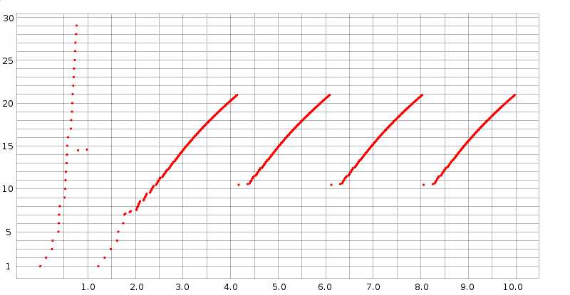
Slow start is at the left edge. Unbounded slow start runs until about T=0.75, when a timeout occurs; bounded slow start runs from about T=1.2 to T=1.8. After that, all losses have been handled with fast recovery (we can tell this because cwnd does not drop below half its previous peak). The first three teeth following slow start have heights (cwnd peak values) of 20.931, 20.934 and 20.934 respectively; when the simulation is extended to 1000 seconds all subsequent peaks have exactly the same height, cwnd = 20.935. The spacing between the peaks is also constant, 1.946 seconds.
Because cwnd is incremented by ns-2 after each arriving ACK as described in 19.2.1 TCP Reno Per-ACK Responses, during the linear-increase phase there are a great many data points jammed together; the bunching effect is made stronger by the choice here of a large-enough dot size to make the slow-start points clearly visible. This gives the appearance of continuous line segments. Upon close examination, these line segments are slightly concave, as discussed in 22.5 Highspeed TCP, due to the increase in RTT as the queue fills. Individual flights of packets can just be made out at the lower-left end of each tooth, especially the first.
31.2.2 The Trace File¶
To examine the simulation (or, for that matter, the animation) more quantitatively, we turn to a more detailed analysis of the trace file, which contains records for all packet events plus (because it was requested) variable-trace information for cwnd_, ssthresh_, ack_ and maxseq_; these were the variables for which we requested traces in the basic1.tcl file above.
The bulk of the trace-file lines are event records; three sample records are below. (These are in the default event-record format for point-to-point links; ns-2 has other event-record formats for wireless. See use-newtrace in 31.6 Wireless Simulation below.)
r 0.58616 0 1 tcp 1000 ------- 0 0.0 2.0 28 43
+ 0.58616 1 2 tcp 1000 ------- 0 0.0 2.0 28 43
d 0.58616 1 2 tcp 1000 ------- 0 0.0 2.0 28 43
The twelve event-record fields are as follows:
- r for received, d for dropped, + for enqueued, - for dequeued. Every arriving packet is enqueued, even if it is immediately dequeued. The third packet above was the first dropped packet in the entire simulation.
- the time, in seconds.
- the number of the sending node, in the order of node definition and starting at 0. If the first field was “+”, “-” or “d”, this is the number of the node doing the enqueuing, dequeuing or dropping. Events beginning with “-” represent this node sending the packet.
- the number of the destination node. If the first field was “r”, this record represents the packet’s arrival at this node.
- the protocol.
- the packet size, 960 bytes of data (as we requested) plus 20 of TCP header and 20 of IP header.
- some TCP flags, here represented as “
-------” because none of the flags are set. Flags include E and N for ECN and A for reduction in the advertised winsize. - the flow ID. Here we have only one: flow 0. This value can be set via the
fid_variable in the Tcl source file; an example appears in the two-sender version below. The same flow ID is used for both directions of a TCP connection. - the source node (0.0), in form (node . connectionID). ConnectionID numbers here are simply an abstraction for connection endpoints; while they superficially resemble port numbers, the node in question need not even simulate IP, and each connection has a unique connectionID at each end. ConnectionID numbers start at 0.
- the destination node (2.0), again with connectionID.
- the packet sequence number as a TCP packet, starting from 0.
- a packet identifier uniquely identifying this packet throughout the simulation; when a packet is forwarded on a new link it keeps its old sequence number but gets a new packet identifier.
The three trace lines above represent the arrival of packet 28 at R, the enqueuing of packet 28, and then the dropping of the packet. All these happen at the same instant.
Mixed in with the event records are variable-trace records, indicating a particular variable has been changed. Here are two examples from t=0.3833:
0.38333 0 0 2 0 ack_ 3
0.38333 0 0 2 0 cwnd_ 5.000
The format of these lines is
- time
- source node of the flow
- source port (as above, an abstract connection endpoint, not a simulated TCP port)
- destination node of the flow
- destination port
- name of the traced variable
- value of the traced variable
The two variable-trace records above are from the instant when the variable cwnd_ was set to 5. It was initially 1 at the start of the simulation, and was incremented upon arrival of each of ack0, ack1, ack2 and ack3. The first line shows the ack counter reaching 3 (that is, the arrival of ack3); the second line shows the resultant change in cwnd_.
The graph above of cwnd v time was made by selecting out these cwnd_ lines and plotting the first field (time) and the last. (Recall that during the linear-increase phase cwnd is incremented by 1.0/cwnd with each arriving new ACK.)
The last ack in the tracefile is
9.98029 0 0 2 0 ack_ 808
Since ACKs started with number 0, this means we sent 809 packets successfully. The theoretical bandwidth was 100 packets/sec × 10 sec = 1000 packets, so this is about an 81% goodput. Use of the ack_ value this way tells us how much data was actually delivered. An alternative statistic is the final value of maxseq_ which represents the number of distinct packets sent; the last maxseq_ line is
9.99029 0 0 2 0 maxseq_ 829
As can be seen from the cwnd-v-time graph above, slow start ends around T=2.0. If we measure goodput from then until the end, we do a little better than 81%. The first data packet sent after T=2.0 is at 2.043184; it is data packet 72. 737 packets are sent from packet 72 until packet 808 at the end; 737 packets in 8.0 seconds is a goodput of 92%.
It is not necessary to use the tracefile to get the final values of TCP variables such as ack_ and maxseq_; they can be printed from within the Tcl script’s finish() procedure. The following example illustrates this, where ack_ and maxseq_ come from the connection tcp0. The global line lists global variables that are to be made available within the body of the procedure; tcp0 must be among these.
proc finish {} {
global ns nf f tcp0
$ns flush-trace
close $namfile
close $tracefile
set lastACK [$tcp0 set ack_]
set lastSEQ [$tcp0 set maxseq_]
puts stdout "final ack: $lastACK, final seq num: $lastSEQ"
exit 0
}
For TCP sending agents, useful member variables to set include:
class_: the identifying number of a flowwindow_: the maximum window size; the default is much too small.packetSize_: we set this to 960 above so the total packet size would be 1000.
Useful member variables either to trace or to print at the simulation’s end include:
maxseq_: the number of the last packet sent, starting at 1 for data packetsack_: the number of the last ACK receivedcwnd_: the current value of the congestion windownrexmitpack_: the number of retransmitted packets
To get a count of the data actually received, we need to look at the TCPsink object, $end0 above. There is no packet counter here, but we can retrieve the value bytes_ representing the total number of bytes received. This will include 40 bytes from the threeway handshake which can either be ignored or subtracted:
set ACKed [expr round ( [$end0 set bytes_] / 1000.0)]
This is a slightly better estimate of goodput. In very long simulations, however, this (or any other) byte count will wrap around long before any of the packet counters wrap around.
In the example above every packet event was traced, a consequence of the line
$ns trace-all $trace
We could instead have asked only to trace particular links. For example, the following line would request tracing for the bottleneck (R⟶B) link:
$ns trace-queue $R $B $trace
This is often useful when the overall volume of tracing is large, and we are interested in the bottleneck link only. In long simulations, full tracing can increase the runtime 10-fold; limiting tracing only to what is actually needed can be quite important.
31.2.3 Single Losses¶
By examining the basic1.tr file above for packet-drop records, we can confirm that only a single drop occurs at the end of each tooth, as was argued in 19.8 Single Packet Losses. After slow start finishes at around T=2, the next few drops are at T=3.963408, T=5.909568 and T=7.855728. The first of these drops is of Data[254], as is shown by the following record:
d 3.963408 1 2 tcp 1000 ------- 0 0.0 2.0 254 531
Like most “real” implementations, the ns-2 implementation of TCP increments cwnd (cwnd_ in the tracefile) by 1/cwnd on each new ACK (19.2.1 TCP Reno Per-ACK Responses). An additional packet is sent by A whenever cwnd is increased this way past another whole number; that is, whenever floor(cwnd) increases. At T=3.95181, cwnd_ was incremented to 20.001, triggering the double transmission of Data[253] and the doomed Data[254]. At this point the RTT is around 190 ms.
The loss of Data[254] is discovered by Fast Retransmit when the third dupACK[253] arrives. The first ACK[253] arrives at A at T=4.141808, and the dupACKs arrive every 10 ms, clocked by the 10 ms/packet transmission rate of R. Thus, A detects the loss at T=4.171808; at this time we see cwnd_ reduced by half to 10.465; the tracefile times for variables are only to 5 decimal places, so this is recorded as
4.17181 0 0 2 0 cwnd_ 10.465
That represents an elapsed time from when Data[254] was dropped of 207.7 ms, more than one RTT. As described in 19.8 Single Packet Losses, however, A stopped incrementing cwnd_ when the first ACK[253] arrived at T=4.141808. The value of cwnd_ at that point is only 20.931, not quite large enough to trigger transmission of another back-to-back pair and thus eventually a second packet drop.
31.2.4 Reading the Tracefile in Python¶
Deeper analysis of ns-2 data typically involves running some sort of script on the tracefiles; we will mostly use the Python (python3) language for this, although the awk language is also traditional. The following is the programmer interface to a simple module (library) nstrace.py:
- nsopen(filename): opens the tracefile
- isEvent(): returns
trueif the current line is a normal ns-2 event record - isVar(): returns
trueif the current line is an ns-2 variable-trace record - isEOF(): returns
trueif there are no more tracefile lines - getEvent(): returns a twelve-element tuple of the ns-2 event-trace values, each cast to the correct type. The ninth and tenth values, which are node.port pairs in the tracefile, are returned as (node port) sub-tuples.
- getVar(): returns a seven-element tuple of ns-2 variable-trace values
- skipline(): skips the current line (useful if we are interested only in event records, or only in variable-trace records, and want to ignore the other type of record)
We will first make use of this in 31.2.6.1 Link utilization measurement; see also 31.4 TCP Loss Events and Synchronized Losses. The nstrace.py file above includes regular-expression checks to verify that each tracefile line has the correct format, but, as these are slow, they are disabled by default. Enabling these checks is potentially useful, however, if some wireless trace records are also included.
31.2.5 The nam Animation¶
Let us now re-examine the nam animation, in light of what can be found in the trace file.
At T=0.120864, the first 1000-byte data packet is sent (at T=0 a 40-byte SYN packet is sent); the actual packet identification number is 1 so we will refer to it as Data[1]. At this point cwnd_ = 2, so Data[2] is enqueued at this same time, and sent at T=0.121664 (the delay exactly matches the A–R link’s bandwidth of 8000 bits in 0.0008 sec). The first loss occurs at T=0.58616, of Data[28]; at T=0.59616 Data[30] is lost. (Data[29] was not lost because R was able to send a packet and thus make room).
From T=.707392 to T=.777392 we begin a string of losses: packets 42, 44, 46, 48, 50, 52, 54 and 56.
At T=0.76579 the first ACK[27] makes it back to A. The first dupACK[27] arrives at T=0.77576; another arrives at T=0.78576 (10 ms later, exactly the bottleneck per-packet time!) and the third dupACK arrives at T=0.79576. At this point, Data[28] is retransmitted and cwnd is halved from 29 to 14.5.
At T=0.985792, the sender receives ACK[29]. DupACK[29]’s are received at T=1.077024, T=1.087024, T=1.097024 and T=1.107024. Alas, this is TCP Reno, in Fast Recovery mode, and it is not implementing Fast Retransmit while Fast Recovery is going on (TCP NewReno in effect fixes this). Therefore, the connection experiences a hard timeout at T=1.22579; the last previous event was at T=1.107024. At this point ssthresh is set to 7 and cwnd drops to 1. Slow start is used up to ssthresh = 7, at which point the sender switches to the linear-increase phase.
31.2.6 Single-sender Throughput Experiments¶
According to the theoretical analysis in 19.7 TCP and Bottleneck Link Utilization, a queue size of close to zero should yield about a 75% bottleneck utilization, a queue size such that the mean cwnd equals the transit capacity should yield about 87.5%, and a queue size equal to the transit capacity should yield close to 100%. We now test this.
We first increase the per-link propagation times in the basic1.tcl simulation above to 50 and 100 ms:
$ns duplex-link $A $R 10Mb 50ms DropTail
$ns duplex-link $R $B 800Kb 100ms DropTail
The bottleneck link here is 800 kbps, or 100 kBps, or 10 ms/packet, so these propagation-delay changes mean a round-trip transit capacity of 30 packets (31 if we include the bandwidth delay at R). In the table below, we run the simulation while varying the queue-limit parameter from 3 to 30. The simulations run for 1000 seconds, to minimize the effect of slow start. Tracing is disabled to reduce runtimes. The “received” column gives the number of distinct packets received by B; if the link utilization were 100% then in 1,000 seconds B would receive 100,000 packets.
| queue_limit | received | utilization %, R→B |
|---|---|---|
| 3 | 79767 | 79.8 |
| 4 | 80903 | 80.9 |
| 5 | 83313 | 83.3 |
| 8 | 87169 | 87.2 |
| 10 | 89320 | 89.3 |
| 12 | 91382 | 91.4 |
| 16 | 94570 | 94.6 |
| 20 | 97261 | 97.3 |
| 22 | 98028 | 98.0 |
| 26 | 99041 | 99.0 |
| 30 | 99567 | 99.6 |
In ns-2, every arriving packet is first enqueued, even if it is immediately dequeued, and so queue-limit cannot actually be zero. A queue-limit of 1 or 2 gives very poor results, probably because of problems with slow start. The run here with queue-limit = 3 is not too far out of line with the 75% predicted by theory for a queue-limit close to zero. When queue-limit is 10, then cwnd will range from 20 to 40, and the link-unsaturated and queue-filling phases should be of equal length. This leads to a theoretical link utilization of about (75%+100%)/2 = 87.5%; our measurement here of 89.3% is in good agreement. As queue-limit continues to increase, the link utilization rapidly approaches 100%, again as expected.
31.2.6.1 Link utilization measurement¶
In the experiment above we estimated the utilization of the R→B link by the number of distinct packets arriving at B. But packet duplicate transmissions sometimes occur as well (see 31.2.6.4 Packets that are delivered twice); these are part of the R→B link utilization but are hard to estimate (nominally, most packets retransmitted by A are dropped by R, but not all).
If desired, we can get an exact value of the R→B link utilization through analysis of the ns-2 trace file. In this file R is node 1 and B is node 2 and our flow is flow 0; we look for all lines of the form
- time 1 2 tcp 1000-------0 0.0 2.0 x y
that is, with field1 = ‘-‘, field3 = 1, field4 = 2, field6 = 1000 and field8 = 0 (if we do not check field6=1000 then we count one extra packet, a simulated SYN). We then simply count these lines; here is a simple script to do this in Python using the nstrace module above:
#!/usr/bin/python3
import nstrace
import sys
def link_count(filename):
SEND_NODE = 1
DEST_NODE = 2
FLOW = 0
count = 0
nstrace.nsopen(filename)
while not nstrace.isEOF():
if nstrace.isEvent():
(event, time, sendnode, dest, dummy, size, dummy, flow, dummy, dummy, dummy, dummy) = nstrace.getEvent()
if (event == "-" and sendnode == SEND_NODE and dest == DEST_NODE and size >= 1000 and flow == FLOW):
count += 1
else:
nstrace.skipline()
print ("packet count:", count);
link_count(sys.argv[1])
For completeness, here is the same program implemented in the Awk scripting language.
BEGIN {count=0; SEND_NODE=1; DEST_NODE=2; FLOW=0}
$1 == "-" { if ($3 == SEND_NODE && $4 == DEST_NODE && $6 >= 1000 && $8 == FLOW) {
count++;
}
}
END {print count;}
31.2.6.2 ns-2 command-line parameters¶
Experiments where we vary one parameter, eg queue-limit, are facilitated by passing in the parameter value on the command line. For example, in the basic1.tcl file we can include the following:
set queuesize $argv
...
$ns queue-limit $R $B $queuesize
Then, from the command line, we can run this as follows:
ns basic1.tcl 5
If we want to run this simulation with parameters ranging from 0 to 10, a simple shell script is
queue=0
while [ $queue -le 10 ]
do
ns basic1.tcl $queue
queue=$(expr $queue + 1)
done
If we want to pass multiple parameters on the command line, we use lindex to separate out arguments from the $argv string; the first argument is at position 0 (in bash and awk scripts, by comparison, the first argument is $1). For two optional parameters, the first representing queuesize and the second representing endtime, we would use
if { $argc >= 1 } {
set queuesize [expr [lindex $argv 0]]
}
if { $argc >= 2 } {
set endtime [expr [lindex $argv 1]]
}
31.2.6.3 Queue utilization¶
In our previous experiment we examined link utilization when queue-limit was smaller than the bandwidth×delay product. Now suppose queue-limit is greater than the bandwidth×delay product, so the bottleneck link is essentially never idle. We calculated in 19.7 TCP and Bottleneck Link Utilization what we might expect as an average queue utilization. If the transit capacity is 30 packets and the queue capacity is 40 then cwndmax would be 70 and cwndmin would be 35; the queue utilization would vary from 70-30 = 40 down to 35-30 = 5, averaging around (40+5)/2 = 22.5.
Let us run this as an ns-2 experiment. As before, we set the A–R and R–B propagation delays to 50 ms and 100 ms respectively, making the RTTnoLoad 300 ms, for about 30 packets in transit. We also set the queue-limit value to 40. The simulation runs for 1000 seconds, enough, as it turns out, for about 50 TCP sawteeth.
At the end of the run, the following Python script maintains a running time-weighted average of the queue size. Because the queue capacity exceeds the total transit capacity, the queue is seldom empty.
#!/usr/bin/python3
import nstrace
import sys
def queuesize(filename):
QUEUE_NODE = 1
nstrace.nsopen(filename)
sum = 0.0
size= 0
prevtime=0
while not nstrace.isEOF():
if nstrace.isEvent(): # counting regular trace lines
(event, time, sendnode, dnode, proto, dummy, dummy, flow, dummy, dummy, seqno, pktid) = nstrace.getEvent()
if (sendnode != QUEUE_NODE): continue
if (event == "r"): continue
sum += size * (time -prevtime)
prevtime = time
if (event=='d'): size -= 1
elif (event=="-"): size -= 1
elif (event=="+"): size += 1
else:
nstrace.skipline()
print("avg queue=", sum/time)
queuesize(sys.argv[1])
The answer we get for the average queue size is about 23.76, which is in good agreement with our theoretical value of 22.5.
31.2.6.4 Packets that are delivered twice¶
Every dropped TCP packet is ultimately transmitted twice, but classical TCP theory suggests that relatively few packets are actually delivered twice. This is pretty much true once the TCP sawtooth phase is reached, but can fail rather badly during slow start.
The following Python script will count packets delivered two or more times. It uses a dictionary, COUNTS, which is indexed by sequence numbers.
#!/usr/bin/python3
import nstrace
import sys
def dup_counter(filename):
SEND_NODE = 1
DEST_NODE = 2
FLOW = 0
count = 0
COUNTS = {}
nstrace.nsopen(filename)
while not nstrace.isEOF():
if nstrace.isEvent():
(event, time, sendnode, dest, dummy, size, dummy, flow, dummy, dummy, seqno, dummy) = nstrace.getEvent()
if (event == "r" and dest == DEST_NODE and size >= 1000 and flow == FLOW):
if (seqno in COUNTS):
COUNTS[seqno] += 1
else:
COUNTS[seqno] = 1
else:
nstrace.skipline()
for seqno in sorted(COUNTS.keys()):
if (COUNTS[seqno] > 1): print(seqno, COUNTS[seqno])
dup_counter(sys.argv[1])
When run on the basic1.tr file above, it finds 13 packets delivered twice, with TCP sequence numbers 43, 45, 47, 49, 51, 53, 55, 57, 58, 59, 60, 61 and 62. These are sent the second time between T=1.437824 and T=1.952752; the first transmissions are at times between T=0.83536 and T=1.046592. If we look at our cwnd-v-time graph above, we see that these first transmissions occurred during the gap between the end of the unbounded slow-start phase and the beginning of threshold-slow-start leading up to the TCP sawtooth. Slow start, in other words, is messy.
31.2.6.5 Loss rate versus cwnd: part 1¶
If we run the basic1.tcl simulation above until time 1000, there are 94915 packets acknowledged and 512 loss events. This yields a loss rate of p = 512/94915 = 0.00539, and so by the formula of 21.2 TCP Reno loss rate versus cwnd we should expect the average cwnd to be about 1.225/√p ≃ 16.7. The true average cwnd is the number of packets sent divided by the elapsed time in RTTs, but as RTTs are not constant here (they get significantly longer as the queue fills), we turn to an approximation. From 31.2.1 Graph of cwnd v time we saw that the peak cwnd was 20.935; the mean cwnd should thus be about 3/4 of this, or 15.7. While not perfect, agreement here is quite reasonable.
See also 31.4.3 Loss rate versus cwnd: part 2.
31.3 Two TCP Senders Competing¶
Now let us create a simulation in which two TCP Reno senders compete for the bottleneck link, and see how fair an allocation each gets. According to the analysis in 20.3 TCP Reno Fairness with Synchronized Losses, this is really a test of the synchronized-loss hypothesis, and so we will also examine the ns-2 trace files for losses and loss responses. We will start with “classic” TCP Reno, but eventually also consider SACK TCP. Note that, in terms of packet losses in the immediate vicinity of any one queue-filling event, we can expect TCP Reno and SACK TCP to behave identically; they differ only in how they respond to losses.
The initial topology will be as follows (though we will very soon raise the bandwidths tenfold, though not the propagation delays):
Broadly speaking, the simulations here will demonstrate that the longer-delay B–D connection receives less bandwidth than the A–D connection, but not quite so much less as was predicted in 20.3 TCP Reno Fairness with Synchronized Losses. The synchronized-loss hypothesis increasingly fails as the B–R delay increases, in that the B–D connection begins to escape some of the packet-loss events experienced by the A–D connection.
We admit at the outset that we will not, however, obtain a quantitative answer to the question of bandwidth allocation. In fact, as we shall see, we run into some difficulties even formulating the proper question. In the course of developing the simulation, we encounter several potential problems:
- The two senders can become synchronized in an unfortunate manner
- When we resolve the previous issue by introducing randomness, the bandwidth division is sensitive to the method selected
- As R’s queue fills, the RTT may increase significantly, thus undermining RTT-based measurements (31.3.9 The RTT Problem)
- Transient queue spikes may introduce unexpected losses
- Coarse timeouts may introduce additional unexpected losses
The experiments and analyses below divide into two broad categories. In the first category, we make use only of the final goodput measurements for the two connections. We consider the first two points of the list above in 31.3.4 Phase Effects, and the third in 31.3.9 The RTT Problem and 31.3.10 Raising the Bandwidth. The first category concludes with some simple loss modeling in 31.3.10.1 Possible models.
In the second category, beginning at 31.4 TCP Loss Events and Synchronized Losses, we make use of the ns-2 tracefiles to extract information about packet losses and the extent to which they are synchronized. Examples related to points four and five of the list above are presented in 31.4.1 Some TCP Reno cwnd graphs. The second category concludes with 31.4.2 SACK TCP and Avoiding Loss Anomalies, in which we demonstrate that SACK TCP is, in terms of loss and recovery, much better behaved than TCP Reno.
31.3.1 The Tcl Script¶
Below is a simplified version of the ns-2 script for our simulation; the full version is at basic2.tcl. The most important variable is the additional one-way delay on the B–R link, here called delayB. Other defined variables are queuesize (for R’s queue_limit), bottleneckBW (for the R–D bandwidth), endtime (the length of the simulation), and overhead (for introducing some small degree of randomization, below). As with basic1.tcl, we set the packet size to 1000 bytes total (960 bytes TCP portion), and increase the advertised window size to 65000 (so it is never the limiting factor).
We have made the delayB value be a command-line parameter to the Tcl file, so we can easily experiment with changing it (in the full version linked to above, overhead, bottleneckBW, endtime and queuesize are also parameters). The one-way propagation delay for the A–D path is 10 ms + 100 ms = 110 ms, making the RTT 220 ms plus the bandwidth delays. At the bandwidths above, the bandwidth delay for data packets adds an additional 11 ms; ACKs contribute an almost-negligible 0.44 ms. We return to the script variable RTTNL, intended to approximate RTTnoLoad, below.
With endtime=300, the theoretical maximum number of data packets that can be delivered is 30,000. If bottleneckBW = 0.8 Mbps (100 packets/sec) then the R–D link can hold ten R⟶D data packets in transit, plus another ten D⟶R ACKs.
In the finish() procedure we have added code to print out the number of packets received by D for each connection; we could also extract this from the trace file.
To gain better control over printing, we have used the format command, which works something like C’s sprintf. It returns a string containing spliced-in numeric values replacing the corresponding %d or %f tokens in the control string; this returned string can then be printed with puts.
The full version linked to above also contains some nam directives, support for command-line arguments, and arranges to name any tracefiles with the same base filename as the Tcl file.
# NS basic2.tcl example of two TCPs competing on the same link.
# Create a simulator object
set ns [new Simulator]
#Open the trace file
set trace [open basic2.tr w]
$ns trace-all $trace
############## some globals (modify as desired) ##############
# queuesize on bottleneck link
set queuesize 20
# default run time, in seconds
set endtime 300
# "overhead" of D>0 introduces a uniformly randomized delay d, 0≤d≤D; 0 turns it off.
set overhead 0
# delay on the A--R link, in ms
set basedelay 10
# ADDITIONAL delay on the B--R link, in ms
set delayB 0
# bandwidth on the bottleneck link, either 0.8 or 8.0 Mbit
set bottleneckBW 0.8
# estimated no-load RTT for the first flow, in ms
set RTTNL 220
############## arrange for output ##############
set outstr [format "parameters: delayB=%f overhead=%f bottleneckBW=%f" $delayB $overhead $bottleneckBW]
puts stdout $outstr
# Define a 'finish' procedure that prints out progress for each connection
proc finish {} {
global ns tcp0 tcp1 end0 end1 queuesize trace delayB overhead RTTNL
set ack0 [$tcp0 set ack_]
set ack1 [$tcp1 set ack_]
# counts of packets *received*
set recv0 [expr round ( [$end0 set bytes_] / 1000.0)]
set recv1 [expr round ( [$end1 set bytes_] / 1000.0)]
# see numbers below in topology-creation section
set rttratio [expr (2.0*$delayB+$RTTNL)/$RTTNL]
# actual ratio of throughputs fast/slow; the 1.0 forces floating point
set actualratio [expr 1.0*$recv0/$recv1]
# theoretical ratio fast/slow with squaring; see text for discussion of ratio1 and ratio2
set rttratio2 [expr $rttratio*$rttratio]
set ratio1 [expr $actualratio/$rttratio]
set ratio2 [expr $actualratio/$rttratio2]
set outstr [format "%f %f %d %d %f %f %f %f %f" $delayB $overhead $recv0 $recv1 $rttratio $rttratio2 $actualratio $ratio1 $ratio2 ]
puts stdout $outstr
$ns flush-trace
close $trace
exit 0
}
############### create network topology ##############
# A
# \
# \
# R---D (Destination)
# /
# /
# B
#Create four nodes
set A [$ns node]
set B [$ns node]
set R [$ns node]
set D [$ns node]
set fastbw [expr $bottleneckBW * 10]
#Create links between the nodes; propdelay on B--R link is 10+$delayB ms
$ns duplex-link $A $R ${fastbw}Mb ${basedelay}ms DropTail
$ns duplex-link $B $R ${fastbw}Mb [expr $basedelay + $delayB]ms DropTail
# this last link is the bottleneck; 1000 bytes at 0.80Mbps => 10 ms/packet
# A--D one-way delay is thus 110 ms prop + 11 ms bandwidth
# the values 0.8Mb, 100ms are from Floyd & Jacobson
$ns duplex-link $R $D ${bottleneckBW}Mb 100ms DropTail
$ns queue-limit $R $D $queuesize
############## create and connect TCP agents, and start ##############
Agent/TCP set window_ 65000
Agent/TCP set packetSize_ 960
Agent/TCP set overhead_ $overhead
#Create a TCP agent and attach it to node A, the delayed path
set tcp0 [new Agent/TCP/Reno]
$tcp0 set class_ 0
# set the flowid here, used as field 8 in the trace
$tcp0 set fid_ 0
$tcp0 attach $trace
$tcp0 tracevar cwnd_
$tcp0 tracevar ack_
$ns attach-agent $A $tcp0
set tcp1 [new Agent/TCP/Reno]
$tcp1 set class_ 1
$tcp1 set fid_ 1
$tcp1 attach $trace
$tcp1 tracevar cwnd_
$tcp1 tracevar ack_
$ns attach-agent $B $tcp1
set end0 [new Agent/TCPSink]
$ns attach-agent $D $end0
set end1 [new Agent/TCPSink]
$ns attach-agent $D $end1
#Connect the traffic source with the traffic sink
$ns connect $tcp0 $end0
$ns connect $tcp1 $end1
#Schedule the connection data flow
set ftp0 [new Application/FTP]
$ftp0 attach-agent $tcp0
set ftp1 [new Application/FTP]
$ftp1 attach-agent $tcp1
$ns at 0.0 "$ftp0 start"
$ns at 0.0 "$ftp1 start"
$ns at $endtime "finish"
#Run the simulation
$ns run
31.3.2 Equal Delays¶
We first try this out by running the simulation with equal delays on both A–R and R–B. The following values are printed out (arranged here vertically to allow annotation)
| value | variable | meaning |
|---|---|---|
| 0.000000 | delayB |
Additional B–R propagation delay, compared to A–R delay |
| 0.000000 | overhead |
overhead; a value of 0 means this is effectively disabled |
| 14863 | recv0 |
Count of cumulative A–D packets received at D (that is, goodput) |
| 14771 | recv1 |
Count of cumulative B–D packets received at D (again, goodput) |
| 1.000000 | rttratio |
RTT_ratio: B–D/A–D (long/short) |
| 1.000000 | rttratio2 |
The square of the previous value |
| 1.006228 | actualratio |
Actual ratio of A–D/B–D goodput, that is, 14863/14771 (note change in order versus RTT_ratio) |
| 1.006228 | ratio1 |
actual_ratio/RTT_ratio |
| 1.006228 | ratio2 |
actual_ratio/RTT_ratio2 |
The one-way A–D propagation delay is 110 ms; the bandwidth delays as noted above amount to 11.44 ms, 10 ms of which is on the R–D link. This makes the A–D RTTnoLoad about 230 ms. The B–D delay is, for the time being, the same, as delayB = 0. We set RTTNL = 220, and calculate the RTT ratio (within Tcl, in the finish() procedure) as (2×delayB + RTTNL)/RTTNL. We really should use RTTNL=230 instead of 220 here, but 220 will be closer when we later change bottleneckBW to 8.0 Mbit/sec rather than 0.8, below. Either way, the difference is modest.
Note that the above RTT calculations are for when the queue at R is empty; when the queue contains 20 packets this adds another 200 ms to the A⟶D and B⟶D times (the reverse direction is unchanged). This may make a rather large difference to the RTT ratio, and we will address it below, but does not matter yet because the propagation delays so far are identical.
In the model of 20.3.3 TCP Reno RTT bias we explored a model in which we expect that ratio2, above, would be about 1.0. The final paragraph of 21.2.2 Unsynchronized TCP Losses hints at a possible model (the 𝛾=𝜆 case) in which ratio1 would be about 1.0. We will soon be in a position to test these theories experimentally. Note that the order of B and A in the goodput and RTT ratios is reversed, to reflect the expected inverse relationship.
In the 300-second run here, 14863+14771 = 29634 packets are sent. This means that the bottleneck link is 98.8% utilized.
In 31.4.1 Some TCP Reno cwnd graphs we will introduce a script (teeth.py) to count and analyze the teeth of the TCP sawtooth. Applying this now, we find there are 67 loss events total, and thus 67 teeth, and in every loss event each flow loses exactly one packet. This is remarkably exact conformance to the synchronized-loss hypothesis of 20.3.3 TCP Reno RTT bias. So far.
31.3.3 Unequal Delays¶
We now begin increasing the additional B–R delay (delayB). Some preliminary data are in the table below, and point to a significant problem: goodput ratios in the last column here are not varying smoothly. The value of 0 ms in the first row means that the B–R delay is equal to the A–R delay; the value of 110 ms in the last row means that the B–D RTTnoLoad is double the A–D RTTnoLoad. The column labeled (RTT ratio)2 is the expected goodput ratio, according to the model of 20.3 TCP Reno Fairness with Synchronized Losses; the actual A–D/B–D goodput ratio is in the final column.
| delayB | RTT ratio | A–D goodput | B–D goodput | (RTT ratio)2 | goodput ratio |
|---|---|---|---|---|---|
| 0 | 1.000 | 14863 | 14771 | 1.000 | 1.006 |
| 5 | 1.045 | 4229 | 24545 | 1.093 | 0.172 |
| 23 | 1.209 | 22142 | 6879 | 1.462 | 3.219 |
| 24 | 1.218 | 17683 | 9842 | 1.484 | 1.797 |
| 25 | 1.227 | 14958 | 13754 | 1.506 | 1.088 |
| 26 | 1.236 | 24034 | 5137 | 1.529 | 4.679 |
| 35 | 1.318 | 16932 | 11395 | 1.738 | 1.486 |
| 36 | 1.327 | 25790 | 3603 | 1.762 | 7.158 |
| 40 | 1.364 | 20005 | 8580 | 1.860 | 2.332 |
| 41 | 1.373 | 24977 | 4215 | 1.884 | 5.926 |
| 45 | 1.409 | 18437 | 10211 | 1.986 | 1.806 |
| 60 | 1.545 | 18891 | 9891 | 2.388 | 1.910 |
| 61 | 1.555 | 25834 | 3135 | 2.417 | 8.241 |
| 85 | 1.773 | 20463 | 8206 | 3.143 | 2.494 |
| 110 | 2.000 | 22624 | 5941 | 4.000 | 3.808 |
For a few rows, such as the first and the last, agreement between the last two columns is quite good. However, there are some decidedly anomalous cases in between (particularly the numbers in bold). As delayB changes from 35 to 36, the goodput ratio jumps from 1.486 to 7.158. Similar dramatic changes in goodput appear as delayB ranges through the sets {23, 24, 25, 26}, {40, 41, 45}, and {60, 61}. These values were, admittedly, specially chosen by trial and error to illustrate relatively discontinuous behavior of the goodput ratio, but, still, what is going on?
31.3.4 Phase Effects¶
This erratic behavior in the goodput ratio in the table above turns out to be due to what are called phase effects in [FJ92]; transmissions of the two TCP connections become precisely synchronized in some way that involves a persistent negative bias against one of them. What is happening is that a “race condition” occurs for the last remaining queue vacancy, and one connection consistently loses this race the majority of the time.
31.3.4.1 Single-sender phase effects¶
We begin by taking a more detailed look at the bottleneck queue when no competition is involved. Consider a single sender A using a fixed window size to send to destination B through bottleneck router R (so the topology is A–R–B), and suppose the window size is large enough that R’s queue is not empty. For the sake of definiteness, assume R’s bandwidth delay is 10 ms/packet; R will send packets every 10 ms, and an ACK will arrive back at A every 10 ms, and A will transmit every 10 ms.
Now imagine that we have an output meter that reports the percentage that has been transmitted of the packet R is currently sending; it will go from 0% to 100% in 10 ms, and then back to 0% for the next packet.
Our first observation is that at each instant when a packet from A fully arrives at R, R is always at exactly the same point in forwarding some earlier packet on towards B; the output meter always reads the same percentage. This percentage is called the phase of the connection, sometimes denoted 𝜙.
We can determine 𝜙 as follows. Consider the total elapsed time for the following:
- R finishes transmitting a packet and it arrives at B
- its ACK makes it back to A
- the data packet triggered by that ACK fully arrives at R
In the absence of other congestion, this R-to-R time includes no variable queuing delays, and so is constant. The output-meter percentage above is determined by this elapsed time. If for example the R-to-R time is 83 ms, and Data[N] leaves R at T=0, then Data[N+winsize] (sent by A upon arrival of ACK[N]) will arrive at R when R has completed sending packets up through Data[N+8] (80 ms) and is 3 ms into transmitting Data[N+9]. We can get this last as a percentage by dividing 83 by R’s 10-ms bandwidth delay and taking the fractional part (in this case, 30%). Because the elapsed R-to-R time here is simply RTTnoLoad minus the bandwidth delay at R, we can also compute the phase as
𝜙 = fractional_part(RTTnoLoad ÷ (R’s bandwidth delay)).
If we ratchet up the winsize until the queue becomes full when each new packet arrives, then the phase percentage represents the fraction of the time the queue has a vacancy. In the scenario above, if we start the clock at T=0 when R has finished transmitting a packet, then the queue has a vacancy until T=3 when a new packet from A arrives. The queue is then full until T=10, when R starts transmitting the next packet in its queue.
Finally, even in the presence of competition through R, the phase of a single connection remains constant provided there are no queuing delays along the bidirectional A–B path except at R itself, and there only in the forward direction towards B. Other traffic sent through R can only add delay in integral multiples of R’s bandwidth delay, and so cannot affect the A–B phase.
31.3.4.2 Two-sender phase effects¶
In the present simulation, we can by the remark in the previous paragraph calculate the phase for each sender; let these be 𝜙A and 𝜙B. The significance of phase to competition is that whenever A and B send packets that happen to arrive at R in the same 10-ms interval while R is forwarding some other packet, if the queue has only one vacancy then the connection with the smaller phase will always win it.
As a concrete example, suppose that the respective RTTnoLoad’s of A and B are 221 and 263 ms. Then A’s phase is 0.1 (fractional_part(221÷10)) and B’s is 0.3. The important thing is not that A’s packets take less time, but that in the event of a near-tie A’s packet must arrive first at R. Imagine that R forwards a B packet and then, four packets (40 ms) later, forwards an A packet. The ACKs elicited by these packets will cause new packets to be sent by A and B; A’s packet will arrive first at R followed 2 ms later by B’s packet. Of course, R is not likely to send an A packet four packets after every B packet, but when it does so, the arrival order is predetermined (in A’s favor) rather than random.
Now consider what happens when a packet is dropped. If there is a single vacancy at R, and packets from A and B arrive in a near tie as above, then it will always be B’s packet that is dropped. The occasional packet-pair sent by A or B as part of the expansion of cwnd will be the ultimate cause of loss events, but the phase effect has introduced a persistent degree of bias in A’s favor.
We can visualize phase effects with ns-2 by letting delayB range over, say, 0 to 50 in small increments, and plotting the corresponding values of ratio2 (above). Classically we expect ratio2 to be close to 1.00. In the graph below, the blue curve represents the goodput ratio; it shows a marked (though not perfect) periodicity with period 5 ms.
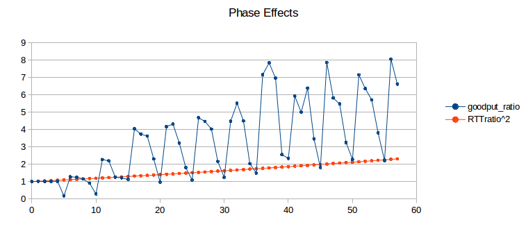
The orange curve represents (RTT_ratio)2; according to 20.3 TCP Reno Fairness with Synchronized Losses we would expect the blue and orange curves to be about the same. When the blue curve is high, the slower B–D connection is proportionately at an unexpected disadvantage. Seldom do phase effects work in favor of the B–D connection, because A’s phase here is quite small (0.144, based on A’s exact RTTnoLoad of 231.44 ms). (If we change the A–R propagation delay (basedelay) to 12 ms, making A’s phase 0.544, the blue curve oscillates somewhat more evenly both above and below the orange curve, but still with approximately the same amplitude.)
Recall that a 5 ms change in delayB corresponds to a 10 ms change in the A–D connection’s RTT, equal to router R’s transmission time. What is happening here is that as the B–D connection’s RTT increases through a range of 10 ms, it cycles through from phase-effect neutrality to phase-effect deficit and back.
31.3.5 Minimizing Phase Effects¶
In the real world, the kind of precise transmission synchronization that leads to phase effects is seldom evident, though perhaps this has less to do with rarity and more with the fact that head-to-head TCP competitions are difficult to observe intimately. Usually, however, there seems to be sufficient other traffic present to disrupt the synchronization. How can we break this synchronization in simulations? One way or another, we must inject some degree of randomization into the bulk TCP flows.
Techniques introduced in [FJ92] to break synchronization in ns-2 simulations were random “telnet” traffic – involving smaller packets sent according to a given random distribution – and the use of random-drop queues (not included in the standard ns-2 distribution). The second, of course, means we are no longer simulating FIFO queues.
A third way of addressing phase effects is to make use of the ns-2 overhead variable, which introduces some modest randomization in packet-departure times at the TCP sender. Because this technique is simpler, we will start with it. One difference between the use of overhead and telnet traffic is that the latter has the effect of introducing delays at all nodes of the network that carry the traffic, not just at the TCP sources.
31.3.6 Phase Effects and overhead¶
For our first attempt at introducing phase-effect-avoiding randomization in the competing TCP flows, we will start with ns-2’s TCP overhead attribute. This is equal to 0 by default and is measured in units of seconds. If overhead > 0, then the TCP source introduces a uniformly distributed random delay of between 0 and overhead seconds whenever an ACK arrives and the source is allowed to send a new packet. Because the distribution is uniform, the average delay so introduced is thus overhead/2. To introduce an average delay of 10 ms, therefore, one sets overhead = 0.02. Packets are always sent in order; if packet 2 is assigned a small overhead delay and packet 1 a large overhead delay, then packet 2 waits until packet 1 has been sent. For this reason, it is a good idea to keep the average overhead delay no more than the average packet interval (here 10 ms).
The following graph shows four curves representing overhead values of 0, 0.005, 0.01 and 0.02 (that is, 5 ms, 10 ms and 20 ms). For each curve, ratio1 (not the actual goodput ratio and not ratio2) is plotted as a function of delayB as the latter ranges from 25 to 55 ms. The simulations run for 300 seconds, and bottleneckBW = 0.8. (We will return to the choice of ratio1 here in 31.3.9 The RTT Problem; the corresponding ratio2 graph is however quite similar, at least in terms of oscillatory behavior.)
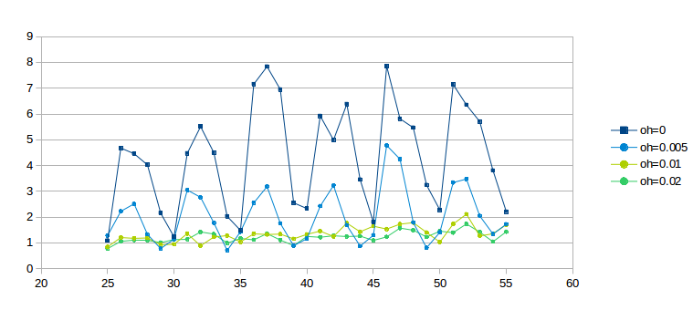
The dark-blue curve for overhead = 0 is wildly erratic due to phase effects; the light-blue curve for overhead = 0.005 has about half the oscillation. Even the light-green overhead = 0.01 curve exhibits some wiggling; it is not until overhead = 0.02 for the darker green curve that the graph really settles down. We conclude that the latter two values for overhead are quite effective at mitigating phase effects.
One crude way to quantify the degree of graph oscillation is by calculating the mean deviation; the respective deviation values for the curves above are are 1.286, 0.638, 0.136 and 0.090.
Recall that the time to send one packet on the bottleneck link is 0.01 seconds, and that the average delay introduced by overhead d is d/2; thus, when overhead is 0.02 each connection would, if acting alone, have an average sender delay equal to the bottleneck-link delay (though overhead delay is like propagation delay, and so a high overhead will not prevent queue buildup).
Compared to the 10-ms-per-packet R–D transmission time, average delays of 5 and 10 ms per flow (overhead of 0.01 and 0.02 respectively) may not seem disproportionate. They are, however, quite large when compared to the 1.0 ms bandwidth delay on the A–R and B–R legs.
Generally, if the goal is to reduce phase effects then overhead should be comparable to the bottleneck-router transmission rate. Using overhead > 0 does increase the RTT, but in this case not considerably.
We conclude that using overhead to break the synchronization that leads to phase effects appears to have worked, at least in the sense that with the value of overhead = 0.02 the goodput ratio increases more-or-less monotonically with increasing delayB.
The problem with using overhead this way is that it does not correspond to any physical network delay or other phenomenon. Its use here represents a decidedly ad hoc strategy to introduce enough randomization that phase effects disappear. That said, it does seem to produce results similar to those obtained by injecting random “telnet” traffic, introduced in the following section.
31.3.7 Phase Effects and telnet traffic¶
We can also introduce anti-phase-effect randomization by making use of the ns-2 telnet application to generate low-to-moderate levels of random traffic. This requires an additional two Agent/TCP objects, representing A–D and B–D telnet connections, to carry the traffic; this telnet traffic will then introduce slight delays in the corresponding bulk (ftp) traffic. The size of the telnet packets sent is determined by the TCP agents’ usual packetSize_ attribute.
For each telnet connection we create an Application/Telnet object and set its attribute interval_; in the script fragment below this is set to tninterval. This represents the average packet spacing in seconds; transmissions are then scheduled according to an exponential random distribution with interval_ as its mean. We remark that “real” telnet terminal-login traffic seldom if ever follows an exponential random distribution, though this is not necessarily a concern as there are other common traffic patterns (eg web traffic or database traffic) that fit this model better.
Actual (simulated) transmissions, however, are also constrained by the telnet connection’s sliding window. It is quite possible that the telnet application releases a new packet for transmission, but it cannot yet be sent because the telnet TCP connection’s sliding window is momentarily frozen, waiting for the next ACK. If the telnet packets encounter congestion and the interval_ is small enough then the sender may have a backlog of telnet packets in its outbound queue that are waiting for the sliding window to advance enough to permit their departure.
set tcp10 [new Agent/TCP]
$ns attach-agent $A $tcp10
set tcp11 [new Agent/TCP]
$ns attach-agent $B $tcp11
set end10 [new Agent/TCPSink]
set end11 [new Agent/TCPSink]
$ns attach-agent $D $end10
$ns attach-agent $D $end11
set telnet0 [new Application/Telnet]
set telnet1 [new Application/Telnet]
set tninterval 0.001 ;# see text for discussion
$telnet0 set interval_ $tninterval
$tcp10 set packetSize_ 210
$telnet1 set interval_ $tninterval
$tcp11 set packetSize_ 210
$telnet0 attach-agent $tcp10
$telnet1 attach-agent $tcp11
“Real” telnet packets, besides not necessarily being exponentially distributed, are most often quite small. In the simulations here we use an uncharacteristically large size of 210 bytes, leading to a total packet size of 250 bytes after the 40-byte simulated TCP/IP header is attached. We denote the latter number by actualSize. See exercise 9.0.
The bandwidth theoretically consumed by the telnet connection is simply actualSize/$tninterval; the actual bandwidth may be lower if the telnet packets are encountering congestion as noted above. It is convenient to define an attribute tndensity that denotes the fraction of the R–D link’s bandwith that the Telnet application will be allowed to use, eg 2%. In this case we have
$tninterval = actualSize / ($tndensity * $bottleneckBW)
For example, if actualSize = 250 bytes, and $bottleneckBW corresponds to 1000 bytes every 10 ms, then the telnet connection could saturate the link if its packets were spaced 2.5 ms apart. However, if we want the telnet connection to use up to 5% of the bottleneck link, then $tninterval should be 2.5/0.05 = 50 ms (converted for ns-2 to 0.05 sec).
The first question we need to address is whether telnet traffic can sufficiently dampen phase-effect oscillations, and, if so, at what densities. The following graph is the telnet version of that above in 31.3.6 Phase Effects and overhead; bottleneckBW is still 0.8 but the simulations now run for 3000 seconds. The telnet total packet size is 250 bytes. The given telnet density percentages apply to each of the A–D and B–D telnet connections; the total telnet density is thus double the value shown.
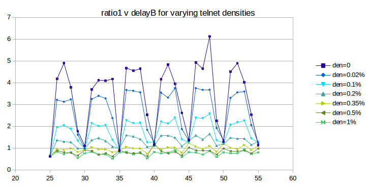
As we hoped, the oscillation does indeed substantially flatten out as the telnet density increases from 0 (dark blue) to 1% (bright green); the mean deviation falls from 1.36 to 0.084. So far the use of telnet is very promising.
Unfortunately, if we continue to increase the telnet density past 1%, the oscillation increases again, as can be seen in the next graph:
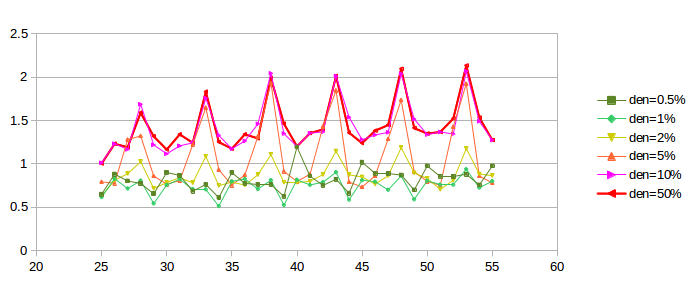
The first two curves, plotted in green, correspond to the “good” densities of the previous graph, with the vertical axis stretched by a factor of two. As densities increase, however, phase-effect oscillation returns, and the curves converge towards the heavier red curve at the top.
What appears to be happening is that, beyond a density of 1% or so, the limiting factor in telnet transmission becomes the telnet sliding window rather than the random traffic generation, as mentioned in the third paragraph of this section. Once the sliding window becomes the limiting factor on telnet packet transmission, the telnet connections behave much like – and become synchronized with – their corresponding bulk-traffic ftp connections. At that point their ability to moderate phase effects is greatly diminished, as actual packet departures no longer have anything to do with the exponential random distribution that generates the packets.
Despite this last issue, the fact that small levels of random traffic can lead to large reductions in phase effects can be taken as evidence that, in the real world, where other traffic sources are ubiquitous, phase effects will seldom be a problem.
31.3.8 overhead versus telnet¶
The next step is to compare the effect on the original bulk-traffic flows of overhead randomization and telnet randomization. The graphs below plot ratio1 as a function of delayB as the latter ranges from 0 to 400 in increments of 5. The bottleneckBW is 0.8 Mbps, the queue capacity at R is 20, and the run-time is 3000 seconds.
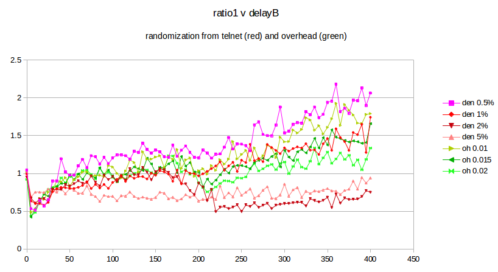
The four reddish-hued curves represent the result of using telnet with a packet size of 250, at densities ranging from 0.5% to 5%. These may be compared with the three green curves representing the use of overhead, with values 0.01, 0.015 and 0.02. While telnet with a density of 1% is in excellent agreement with the use of overhead, it is also apparent that smaller telnet densities give a larger ratio1 while larger densities give a smaller. This raises the awkward possibility that the exact mechanism by which we introduce randomization may have a material effect on the fairness ratios that we ultimately observe. There is no “right” answer here; different randomization sources or levels may simply lead to differing fairness results.
The advantage of using telnet for randomization is that it represents an actual network phenomenon, unlike overhead. The drawback to using telnet is that the effect on the bulk-traffic goodput ratio is, as the graph above shows, somewhat sensitive to the exact value chosen for the telnet density.
In the remainder of this chapter, we will continue to use the overhead model, for simplicity, though we do not claim this is a universally appropriate approach.
31.3.9 The RTT Problem¶
In all three of the preceding graphs (31.3.6 Phase Effects and overhead, 31.3.7 Phase Effects and telnet traffic and 31.3.8 overhead versus telnet), the green curves on the graphs appear to show that, once sufficient randomization has been introduced to disrupt phase effects, ratio1 converges to 1.0. This, however, is in fact an artifact, due to the second flaw in our simulated network: RTT is not very constant. While RTTnoLoad for the A–D link is about 220 ms, queuing delays at R (with queuesize = 20) can almost double that by adding up to 20 × 10 ms = 200 ms. This means that the computed values for RTTratio are too large, and the computed values for ratio1 are thus too small. While one approach to address this problem is to keep careful track of RTTactual, a simpler strategy is to create a simulated network in which the queuing delay is small compared to the propagation delay and so the RTT is relatively constant. We turn to this next.
31.3.10 Raising the Bandwidth¶
In modern high-bandwidth networks, queuing delays tend to be small compared to the propagation delay; see 19.7 TCP and Bottleneck Link Utilization. To simulate such a network here, we simply increase the bandwidth of all the links tenfold, while leaving the existing propagation delays the same. We achieve this by setting bottleneckBW = 8.0 instead of 0.8. This makes the A–D RTTnoLoad equal to about 221 ms; queuing delays can now amount to at most an additional 20 ms.
The value of overhead also needs to be scaled down by a factor of 10, to 0.002 sec, to reflect an average delay in the same range as the bottleneck-link packet transmission time.
Here is a graph of results for bottleneckBW = 8.0, time = 3000, overhead = 0.002 and queuesize = 20. We still use 220 ms as the estimated RTT, though the actual RTT will range from 221 ms to 241 ms. The delayB parameter runs from 0 to 400 in steps of 1.0.
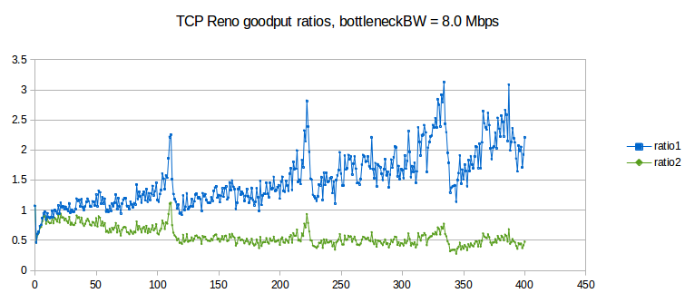
The first observation to make is that ratio1 is generally too large and ratio2 is generally too small, when compared to 1.0. In other words, neither is an especially good fit. This appears to be a fairly general phenomenon, in both simulation and the real world: TCP Reno throughput ratios tend to be somewhere between the corresponding RTT ratio and the square of the RTT ratio.
The synchronized-loss hypothesis led to the prediction (20.3 TCP Reno Fairness with Synchronized Losses) that the goodput ratio would be close to RTT_ratio2. As this conclusion appears to fail, the hypothesis too must fail, at least to a degree: it must be the case that not all losses are shared.
Throughout the graph we can observe a fair amount of “noise” variation. Most of this variation appears unrelated to the 5 ms period we would expect for phase effects (as in the graph at 31.3.4.2 Two-sender phase effects). However, it is important to increment delayB in amounts much smaller than 5 ms in order to rule this out, hence the increment of 1.0 here.
There are strong peaks at delayB = 110, 220 and 330. These delayB values correspond to increasing the RTT by integral multiples 2, 3 and 4 respectively, and the peaks are presumably related to some kind of higher-level phase effect.
31.3.10.1 Possible models¶
If the synchronized-loss fairness model fails, with what do we replace it? Here are two ad hoc options. First, we can try to fit a curve of the form
goodput_ratio = K×(RTT_ratio)𝛼
to the above data. If we do this, the value for the exponent 𝛼 comes out to about 1.58, sort of a “compromise” between ratio2 (𝛼=2) and ratio1 (𝛼=1), although the value of the exponent here is somewhat sensitive to the details of the simulation.
An entirely different curve to fit to the data, based on the appearance in the graph that ratio2 ≃ 0.5 past 120, is
goodput_ratio = 1/2 × (RTT_ratio)2
We do not, however, possess for either of these formulas a model for the relative losses in the two primary TCP connections that is precise enough to offer an explanation of the formula (though see the final paragraph of 31.4.2.2 Relative loss rates).
31.3.10.2 Higher bandwidth and link utilization¶
One consequence of raising the bottleneck bandwidth is that total link utilization drops, for delayB = 0, to 80% of the bandwidth of the bottleneck link, from 98%; this is in keeping with the analysis of 19.7 TCP and Bottleneck Link Utilization. The transit capacity is 220 packets and another 20 can be in the queue at R; thus an ideal sawtooth would oscillate between 120 and 240 packets. We do have two senders here, but when delayB = 0 most losses are synchronized, meaning the two together behave like one sender with an additive-increase value of 2. As cwnd varies linearly from 120 to 240, it spends 5/6 of the time below the transit capacity of 220 packets – during which period the average cwnd is (120+220)/2 = 170 – and 1/6 of the time with the path 100% utilized; the weighted average estimating total goodput is thus (5/6)×170/220 + (1/6)×1 = 81%.
When delayB = 400, combined TCP Reno goodput falls to about 51% of the bandwidth of the bottleneck link. This low utilization, however, is indeed related to loss and timeouts; the corresponding combined goodput percentage for SACK TCP (which as we shall see in 31.4.2 SACK TCP and Avoiding Loss Anomalies is much better behaved) is 68%.
31.4 TCP Loss Events and Synchronized Losses¶
If the synchronized-loss model is not entirely accurate, as we concluded from the graph above, what does happen with packet losses when the queue fills?
At this point we shift focus from analyzing goodput ratios to analyzing the underlying loss events, using the ns-2 tracefile. We will look at the synchronization of loss events between different connections and at how many individual packet losses may be involved in a single TCP loss response.
One of the conclusions we will reach is that TCP Reno’s response to queue overflows in the face of competition is often quite messy, versus the single-loss behavior in the absence of competition as described above in 31.2.3 Single Losses. If we are trying to come up with a packet-loss model to replace the synchronized-loss hypothesis, it turns out that we would do better to switch to SACK TCP, though use of SACK TCP will not change the goodput ratios much at all. (The fact that Selective ACKs are nearly universal in the real world is another good reason to enable them here.)
Packets are dropped when the queue fills. It may be the case that only a single packet is dropped; it may be the case that multiple packets are dropped from each of multiple connections. We will refer to the set of packets dropped as a drop cluster. After a packet is dropped, TCP Reno discovers this just over one RTT after it was sent, through Fast Retransmit, and then responds by halving cwnd, through Fast Recovery.
TCP Reno retransmits only one lost packet per RTT; TCP NewReno does the same but SACK TCP may retransmit multiple lost packets together. If enough packets were lost from a TCP Reno/NewReno connection, not all of them may be retransmitted by the point the retransmission-timeout timer expires (typically 1-2 seconds), resulting in a coarse timeout. At that point, TCP abandons its Fast-Recovery process, even if it had been progressing steadily.
Eventually the TCP senders that have experienced packet loss reduce their cwnd, and thus the queue utilization drops. At that point we would classically not expect more losses until the senders involved have had time to grow their cwnds through the additive-increase process to the point of again filling the queue. As we shall see in 31.4.1.3 Transient queue peaks, however, this classical expectation is not entirely correct.
It is possible that the packet losses associated with one full-queue period are spread out over sufficient time (more than one RTT, at a minimum) that TCP Reno responds to them separately and halves cwnd more than once in rapid succession. We will refer to this as a loss-response cluster, or sometimes as a tooth cluster.
In the ns-2 simulator, counting individual lost packets and TCP loss responses is straightforward enough. For TCP Reno, there are only two kinds of loss responses: Fast Recovery, in which cwnd is halved, and coarse timeout, in which cwnd is set to 1.
Counting clusters, however, is more subjective; we need to decide when two drops or responses are close enough to one another that they should be counted as part of the same cluster. We use the notion of granularity here: two or more losses separated by less time than the granularity time interval are counted as a single event. We can also use granularity to decide when two loss responses in different connections are to be considered parts of the same event, or to tie loss responses to packet losses.
The appropriate length of the granularity interval is not as clear-cut as might be hoped. In some cases a couple RTTs may be sufficient, but note that the RTTnoLoad of the B–D connection above ranges from 0.22 sec to over 1.0 sec as delayB increases from 0 to 400 ms. In order to cover coarse timeouts, a granularity of from two to three seconds often seems to work well for packet drops.
If we are trying to count losses to estimate the loss rate as in the formula cwnd = 1.225/√p as in 21.2 TCP Reno loss rate versus cwnd, then we should count every loss response separately; the argument in 21.2 TCP Reno loss rate versus cwnd depended on counting all loss responses. The difference between one fast-recovery response and two in rapid succession is that in the latter case cwnd is halved twice, to about a quarter of its original value.
However, if we are interested in whether or not losses between two connections are synchronized, we need again to make use of granularity to make sure two “close” losses are counted as one. In this setting, a granularity of one to two seconds is often sufficient.
31.4.1 Some TCP Reno cwnd graphs¶
We next turn to some examples of actual TCP behavior, and present a few hopefully representative cwnd graphs. In each figure, the red line represents the longer-path (B–D) flow and the green line represents the shorter (A–D) flow. The graphs are of our usual simulation with bottleneckBW = 8.0 and overhead = 0.002, and run for 300 seconds.
While the immediate goal is to illuminate some of the above loss-clustering issues above, the graphs serve as well to illustrate the general behavior of TCP Reno competition and its variability. We will also use one of the graphs to explore the idea of transient queue spikes.
In each case we can count teeth visually or via a Python script; see 31.4.2.1 Counting teeth in Python. In the latter case we must use an appropriate granularity interval (eg 2.0 seconds) if we want the count to agree even approximately with the visual count. Many times the tooth count is quite dependent on the exact value of the granularity.
31.4.1.1 delayB = 0¶
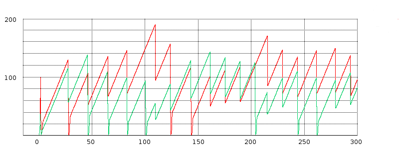
We start with the equal-RTTs graph, that is, delayB = 0. In this figure the teeth (loss events) are almost completely synchronized; the only unsynchronized loss events are the green flow’s losses at T=100 and at about T=205. The two cwnd graphs, though, do not exactly move in lockstep. The red flow has three coarse timeouts (where cwnd drops to 0), at about T=30, T=125 and T=145; the green flow has seven coarse timeouts.
The red graph gets a little ahead of the green in the interval 50-100, despite synchronized losses there. Just before T=50 the green graph has a fast-recovery response followed by a coarse timeout; the next three green losses also involve coarse timeouts. Despite perfect loss synchronization in the range from T=40 to T=90, the green graph ends up set back for a while because its three loss events all involve coarse timeouts while none of the red graph’s do.
31.4.1.2 delayB = 25¶
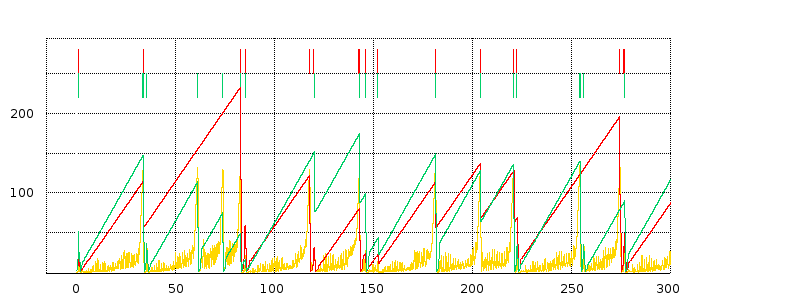
In this delayB = 25 graph, respective packet losses for the red and green flows are marked along the top, and the cwnd graphs are superimposed over a graph of the averaged queue utilization in gold. The time scale for queue-utilization averaging is about one RTT here. The queue graph is scaled vertically (by a factor of 8) so the queue values (maximum 20) are numerically comparable to the cwnd values (the transit capacity is about 230).
There is one large red tooth from about T=40 to T=90 that corresponds to three green teeth; from about T=220 to T=275 there is one red tooth corresponding to two green teeth. Aside from these two points, representing three isolated green-only losses, the red and green teeth appear quite well synchronized.
We also see evidence of loss-response clusters. At around T=143 the large green tooth peaks; halfway down there is a little notch ending at T=145 that represents a fast-recovery loss event interpreted by TCP as distinct. There is actually a third event, as well, representing a coarse timeout shortly after T=145, and then a fourth fast-recovery event at about T=152 which we will examine shortly. At T≃80, the red tooth has a fast-recovery loss event followed very shortly by a coarse timeout; this happens for both flows at about T=220.
Overall, the red path has 11 teeth if we use a tooth-counting granularity of 3 seconds, and 8 teeth if the granularity is 5 seconds. We do not count anything that happens in the slow-start phase, generally before T=3.0, nor do we count the “tooth” at T=300 when the graph ends.
The slope of the green teeth is slightly greater than the slope of the red teeth, representing the longer RTT for the red connection.
As for the queue graph, there is perhaps more “noise” than expected, but generally the right edges of the teeth – the TCP loss responses – are very well aligned with peaks representing the queue filling up. Recall that the transit capacity for flow1 here is about 230 packets and the queue capacity is about 20; we therefore in general expect the sum of the two cwnds to range between 125 and 250, and that the queue should mostly remain empty until the sum reached 230. We can indeed confirm visually that in most cases the tooth peaks do indeed add up to about 250.
31.4.1.3 Transient queue peaks¶
The loss in the graph above at around T=152 is a little peculiar; this is fully 10 seconds after the primary tooth peak that preceded it. Let us zoom in on it a little more closely, this time without any averaging of the queue-utilization graph.
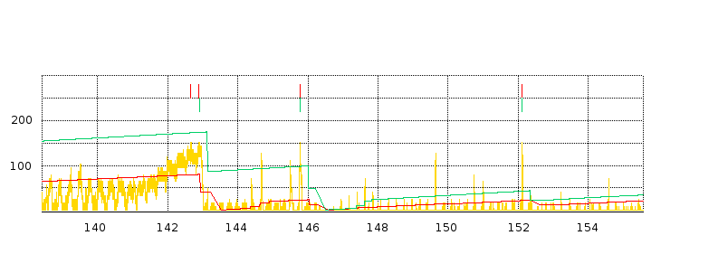
There are two very sharp, narrow peaks in the queue graph, just before T=146 and just after T=152, each causing packet drops for both flows. Neither peak, especially the latter one, appears to have much to do with the gradual queue-filling and loss event at T=143. Neither one of these transient queue peaks is associated with the sum of the cwnds approaching the maximum of about 250; at the T≃146 peak the sum of the cwnds is about 22+97 = 119 and at T≃152 the sum is about 21+42 = 63. ACKs for either sender cannot return from the destination D faster than the bottleneck-link rate of 1 packet/ms; this might suggest new packets from senders A and B cannot arrive at R faster than a combined rate of 1 packet/ms. What is going on?
What is happening is that each flow sends a flight of about 20 packets, spaced 1 ms apart, but by coincidence these two flights begin arriving at R at the same moment. The runup in the queue near T=152 occurs from T=152.100 to the first drop at T=152.121. During this 21 ms interval, a flight of 20 packets arrive from node A (flow 0), and a flight of 19 packets arrive from node B (flow 1). These 39 packets in 21 ms means the queue utilization at R must increase by 39-21 = 18, which is sufficient to overflow the queue as it was not quite empty beforehand. The ACK flights that triggered these data-packet flights were indeed spaced 1 ms apart, consistent with the bottleneck link, but the ACKs (and the data-packet flights that triggered those ACKs) passed through R at quite different times, because of the 25-ms difference in propagation delay on the A–R and B–R links.
Transient queue peaks like this complicate any theory of relative throughput based on gradually filling the queue. Fortunately, while transient peaks themselves are quite common (as can be seen from the zoomed graph above), only occasionally do they amount to enough to overflow the queue. And, in the examples created here, the majority of transient overflow peaks (including the one analyzed above) are within a few seconds of a TCP coarse timeout response and may have some relationship to that timeout.
The existence of transient queue peaks can be used to argue that queues should always have a reasonable “surge” capacity; or, more specifically, that bufferbloat should not be addressed simply by reducing the queue capacity to a very small level (21.5.1 Bufferbloat). However, transient peaks are relatively infrequent.
31.4.1.4 delayB = 61¶
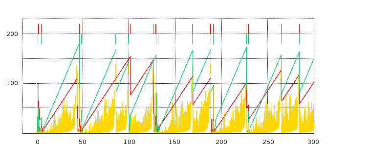
For this graph, note that the red and green loss events at T=130 are not quite aligned; the same happens at T=45 and T=100.
We also have several multiple-loss-response clusters, at T=40, T=130, T=190 and T=230.
The queue graph gives the appearance of much more solid yellow; this is due to a large number of transient queue spikes. Under greater magnification it becomes clear these spikes are still relatively sparse, however. There are transient queue overflows at T=46 and T=48, following a “normal” overflow at T=44, at T=101 following a normal overflow at T=99, at T=129 and T=131 following a normal overflow at T=126, and at T=191 following a normal overflow at T=188.
31.4.1.5 delayB = 120¶
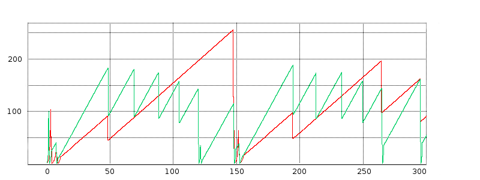
Here we have (without the queue data) a good example of highly unsynchronized teeth: the green graph has 12 teeth, after the start, while the red graph has five. But note that the red-graph loss events are a subset of the green loss events.
31.4.2 SACK TCP and Avoiding Loss Anomalies¶
Neither the coarse timeouts nor the “clustered” loss responses in the graphs above were anticipated in our original fairness model in 20.3 TCP Reno Fairness with Synchronized Losses. It is time to see if we can avoid these anomalies and thus obtain behavior closer to the classic sawtooth. It turns out that SACK TCP fills the bill quite nicely.
In the following subsection (31.4.2.1 Counting teeth in Python) is a script for counting loss responses (“teeth”). If we run it on the tracefiles from our TCP Reno simulations with bottleneckBW = 8.0 and time = 300, we find that, for each flow, about 30-35% of all loss responses are coarse timeouts. There is little if any dependence on the value for delayB.
If we change the two tcp connections in the simulation to Agent/TCP/Newreno, the coarse-timeout fraction falls by over half, to under 15%. This is presumably because TCP NewReno is better able to handle multiple packet drops.
However, when we change the TCP connections to use SACK TCP, the situation improves dramatically. We get essentially no coarse timeouts. Runs for 3000 seconds, typically involving 100-200 cwnd-halving adjustments per flow, almost never have more than one coarse timeout and the majority of the time have none.
Clusters of multiple loss responses also vanish almost entirely. In these 3000-second runs, there are usually 1-2 cases where two loss responses occur within 1.0 seconds (over 4 RTTs for the A–D connection) of one another.
SACK TCP’s smaller number of packet losses results in a marked improvement in goodput. Total link utilization ranges from 80.4% when delayB = 0 down to 68.3% when delayB = 400. For TCP Reno, the corresponding utilization range is from 77.5% down to 51.5%.
Note that switching to SACK TCP is unlikely to have a significant impact on the distribution of packet losses; SACK TCP differs from TCP Reno only in the way it responds to losses.
The SACK TCP sender is specified in ns-2 via Agent/TCP/Sack1. The receiver must also be SACK-aware; this is done by creating the receiver with Agent/TCPSink/Sack1.
When we switch to SACK TCP, the underlying fairness situation does not change much. Here is a graph similar to that above in 31.3.10 Raising the Bandwidth. The run time is 3000 seconds, bottleneckBW is 8 Mbps, and delayB runs from 0 to 400 in increments of 5. (We did not use an increment of 1, as in the similar graph in 31.3.10 Raising the Bandwidth, because we are by now confident that phase effects have been taken care of.)
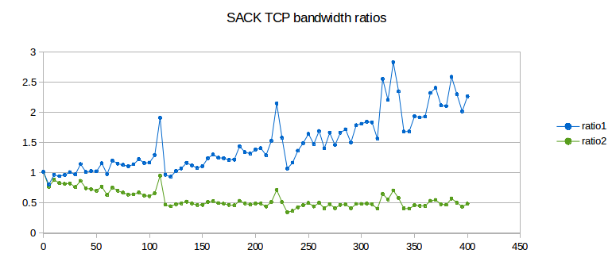
Ratio1 is shown in blue and ratio2 in green. We again try to fit curves as in 31.3.10.1 Possible models above. For the exponential model, goodput_ratio = K×(RTT_ratio)𝛼, the value for the exponent 𝛼 comes out this time to about 1.31, noticeably below TCP Reno’s value of 1.57. There remains, however, considerable “noise” despite the less-frequent sampling interval, and it is not clear the difference is significant. The second model, goodput_ratio ≃ 0.5 × (RTT_ratio)2, still also appears to remain a good fit.
31.4.2.1 Counting teeth in Python¶
Using our earlier Python nstrace.py module, we can easily count the times cwnd_ is reduced; these events correspond to loss responses. Anticipating more complex scenarios, we define a Python class flowstats to hold the per-flow information, though in this particular case we know there are exactly two flows.
We count every time cwnd_ gets smaller; we also keep a count of coarse timeouts. As a practical matter, two closely spaced reductions in cwnd_ are always due to a fast-recovery event followed about a second later by a coarse timeout. If we want a count of each separate TCP response, we count them both.
We do not count anything until after STARTPOINT. This is to avoid counting losses related to slow start.
#!/usr/bin/python3
import nstrace
import sys
# counts all points where cwnd_ drops.
STARTPOINT = 3.0 # wait for slow start to be done
class flowstats: # python object to hold per-flow data
def __init__(self):
self.toothcount = 0
self.prevcwnd = 0
self.CTOcount = 0 # Coarse TimeOut count
def countpeaks(filename):
global STARTPOINT
nstrace.nsopen(filename)
flow0 = flowstats()
flow1 = flowstats()
while not nstrace.isEOF():
if nstrace.isVar(): # counting cwnd_ trace lines
(time, snode, dummy, dummy, dummy, varname, cwnd) = nstrace.getVar()
if (time < STARTPOINT): continue
if varname != "cwnd_": continue
if snode == 0: flow=flow0
else: flow=flow1
if cwnd < flow.prevcwnd:
flow.toothcount += 1 # count this as a tooth
if cwnd == 1.0: flow.CTOcount += 1 # coarse timeout
flow.prevcwnd=cwnd
else:
nstrace.skipline()
print ("flow 0 teeth:", flow0.toothcount, "flow 1 teeth:", flow1.toothcount)
print ("flow 0 coarse timeouts:", flow0.CTOcount, "flow 1 coarse timeouts:", flow1.CTOcount)
countpeaks(sys.argv[1])
A more elaborate version of this script, set up to count clusters of teeth and clusters of drops, is available in teeth.py. If a new cluster starts at time T, all teeth/drops by time T + granularity are part of the same cluster; the next tooth/drop after T + granularity starts the next new cluster.
31.4.2.2 Relative loss rates¶
At this point we accept that the A–D/B–D throughput ratio is generally smaller than the value predicted by the synchronized-loss hypothesis, and so the A–D flow must have additional losses to account for this. Our next experiment is to count the loss events in each flow, and to identify the loss events common to both flows.
The following graph demonstrates the rise in A–D losses as a percentage of the total, using SACK TCP. We use the tooth-counting script from the previous section, with a granularity of 1.0 sec. With SACK TCP it is rare for two drops in the same flow to occur close to one another; the granularity here is primarily to decide when two teeth in the two different flows are to be counted as shared.
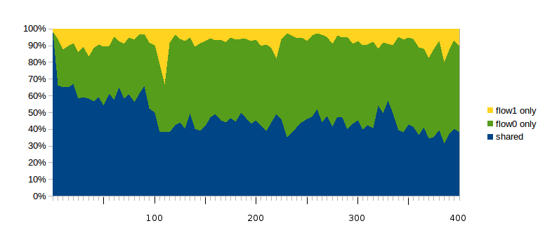
The blue region at the bottom represents the percentage of all loss-response events (teeth) that are shared between both flows. The green region in the middle represents the percentage of all loss-response events that apply only to the faster A–D connection (flow 0); these rise to 30% very quickly and remain at about 50% as delayB ranges from just over 100 up to 400. The uppermost yellow region represents the loss events that affected only the slower B–D connection (flow 1); these are usually under 10%.
As a rough approximation, if we assume a 50/50 division between shared (blue) and flow-0-only (green) loss events, we have losscount0/losscount1 = 𝛾 = 2. Applying the formula of 21.2.2 Unsynchronized TCP Losses, we get bandwidth0/bandwidth1 = (RTT_ratio)2/2, or ratio2 = 1/2. While it is not at all clear this will continue to hold as delayB continues to increase beyond 400, it does suggest a possible underlying explanation for the second formula of 31.3.10.1 Possible models.
31.4.3 Loss rate versus cwnd: part 2¶
In 21.2 TCP Reno loss rate versus cwnd we argued that the average value of cwnd was about K/√p, where the constant K was somewhere between 1.225 and 1.309. In 31.2.6.5 Loss rate versus cwnd: part 1 above we tested this for a single connection with very regular teeth; in this section we will test this hypothesis in the two-connections simulation. In order to avoid coarse timeouts, which were not included in the original model, we will use SACK TCP.
Over the lifetime of a connection, the average cwnd is the number of packets sent divided by the number of RTTs. This simple relationship is slightly complicated by the fact that the RTT varies with the fullness of the bottleneck queue, but, as before, this effect can be minimized if we choose models where RTTnoLoad is large compared with the queuing delay.
We will as before set bottleneckBW = 8.0; at this bandwidth queuing delays add less than 10% to RTTnoLoad. For the longer-path flow1, RTTnoLoad ≃ 220 + 2×delayB ms. We will for both flows use the appropriate RTTnoLoad as an approximation for RTT, and will use the number of packets acknowledged as an approximation for the number transmitted. These calculations give the true average cwnd values in the table below. The estimated average cwnd values are from the formula K/√p, where the loss ratio p is the total number of teeth, as counted earlier, divided by the number of that flow’s packets.
With the relatively high value for bottleneckBW it takes a long simulation to get a reasonable number of losses. The simulations used here ran 3000 seconds, long enough that each connection ended up with 100-200 losses.
Here is the data, for each flow, using K=1.225. The bold columns represent the extent by which the ratio of the estimated average cwnd to the true average cwnd differs from unity. These error values are reasonably close to zero, suggesting that the formula cwnd = K/√p is reasonably accurate.
delayB |
true avg cwnd0 | est avg cwnd0 | error0 | true avg cwnd1 | est avg cwnd1 | error1 |
|---|---|---|---|---|---|---|
| 0 | 89.2 | 93.5 | 4.8% | 87.7 | 92.2 | 5.1% |
| 10 | 92.5 | 95.9 | 3.6% | 95.6 | 99.2 | 3.8% |
| 20 | 95.6 | 99.2 | 3.7% | 98.9 | 101.9 | 3.0% |
| 40 | 104.9 | 108.9 | 3.8% | 103.3 | 105.6 | 2.2% |
| 70 | 117.0 | 121.6 | 3.9% | 101.5 | 102.8 | 1.3% |
| 100 | 121.9 | 126.9 | 4.1% | 104.1 | 104.1 | 0% |
| 150 | 125.2 | 129.8 | 3.7% | 112.7 | 109.7 | -2.6% |
| 200 | 133.0 | 137.5 | 3.4% | 95.9 | 93.3 | -2.7% |
| 250 | 133.4 | 138.2 | 3.6% | 81.0 | 78.6 | -3.0% |
| 300 | 134.6 | 138.8 | 3.1% | 74.2 | 70.9 | -4.4% |
| 350 | 135.2 | 139.1 | 2.9% | 69.8 | 68.4 | -2.0% |
| 400 | 137.2 | 140.6 | 2.5% | 60.4 | 58.5 | -3.2% |
The table also clearly shows the rise in flow0’s cwnd, cwnd0, and also the fall in cwnd1.
A related observation is that the absolute number of losses – for either flow – slowly declines as delayB increases, at least in the delayB ≤ 400 range we have been considering. For flow 1, with the longer RTT, this is because the number of packets transmitted drops precipitously (almost sevenfold) while cwnd – and therefore the loss-event probability p – stays relatively constant. For flow 0, the total number of packets sent rises as flow 1 drops to insignificance, but only by about 50%, and the average cwnd0 (above) rises sufficiently fast (due to flow 1’s decline) that
total_losses = total_sent × p = total_sent × K/cwnd2
generally does not increase.
31.5 TCP Reno versus TCP Vegas¶
In 22.6 TCP Vegas we described an alternative to TCP Reno known as TCP Vegas; in 22.6.1 TCP Vegas versus TCP Reno we argued that when the capacity of a FIFO bottleneck queue was significant relative to the transit capacity, TCP Vegas would be at a disadvantage, but competition might be fairer when the queue capacity was small. Here we will test that theory.
In our standard model in 31.3 Two TCP Senders Competing with bottleneckBW = 8.0 Mbps, A–R and B–R delays of 10 ms and an R–D delay of 100 ms, the transit capacity for the A–D and B–D paths is 220 packets. We will simulate a competition between TCP Reno and TCP Vegas for queue sizes from 10 to 220; as earlier, we will use overhead = 0.002.
In our first attempt, with the default TCP Vegas parameters of 𝛼=1 and 𝛽=3, things start out rather evenly: when the queuesize is 10 the Reno/Vegas goodput ratio is 1.02. However, by the time the queue size is 220, the ratio has climbed almost to 22; TCP Vegas is swamped. Raising 𝛼 and 𝛽 helps a little for larger queues (perhaps at the expense of performance at small queue sizes); here is the graph for 𝛼=3 and 𝛽=6:
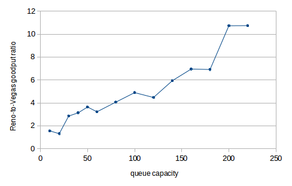
The vertical axis plots the Reno-to-Vegas goodput ratio; the horizontal axis represents the queue capacity. The performance of TCP Vegas falls off quite quickly as the queue size increases. One reason the larger 𝛼 may help is that this slightly increases the range in which TCP Vegas behaves like TCP Reno. (For a rather different outcome using fair queuing rather than FIFO queuing, see 23.6.1 Fair Queuing and Bufferbloat.)
To create an ns-2 TCP Vegas connection and set 𝛼 and 𝛽 one uses
set tcp1 [new Agent/TCP/Vegas]
$tcp1 set v_alpha_ 3
$tcp1 set v_beta_ 6
In prior simulations we have also made the following setting, in order to make the total TCP packetsize including headers be 1000:
Agent/TCP set packetSize_ 960
It turns out that for TCP Vegas objects in ns-2, the packetSize_ includes the headers, as can be verified by looking at the tracefile, and so we need
Agent/TCP/Vegas set packetSize_ 1000
Here is a cwnd-v-time graph comparing TCP Reno and TCP Vegas; the queuesize is 20, bottleneckBW is 8 Mbps, overhead is 0.002, and 𝛼=3 and 𝛽=6. The first 300 seconds are shown. During this period the bandwidth ratio is about 1.1; it rises to close to 1.3 (all in TCP Reno’s favor) when T=1000.
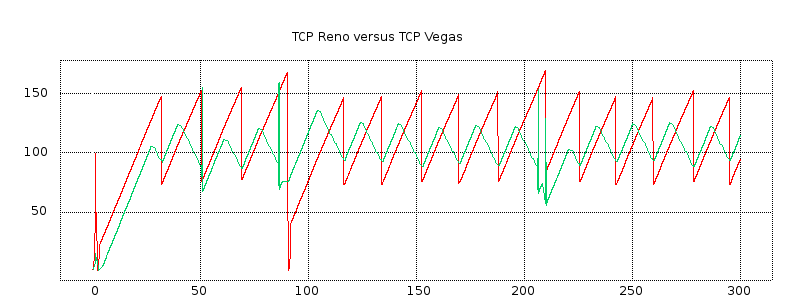
The red plot represents TCP Reno and the green represents TCP Vegas. The green plot shows some spikes that probably represent implementation artifacts.
Five to ten seconds before each sharp TCP Reno peak, TCP Vegas has its own softer peak. The RTT has begun to rise, and TCP Vegas recognizes this and begins decrementing cwnd by 1 each RTT. At the point of packet loss, TCP Vegas begins incrementing cwnd again. During the cwnd-decrement phase, TCP Vegas falls behind relative to TCP Reno, but it may catch up during the subsequent increment phase because TCP Vegas often avoids the cwnd = cwnd/2 multiplicative decrease and so often continues after a loss event with a larger cwnd than TCP Reno.
We conclude that, for smaller bottleneck-queue sizes, TCP Vegas does indeed hold its own. Unfortunately, in the scenario here the bottleneck-queue size has to be quite small for this to work; TCP Vegas suffers in competition with TCP Reno even for moderate queue sizes. That said, queue capacities out there in the real Internet tend to increase much more slowly than bandwidth, and there may be real-world situations were TCP Vegas performs quite well when compared to TCP Reno.
31.6 Wireless Simulation¶
When simulating wireless networks, there are no links; all the configuration work goes into setting up the nodes, the traffic and the wireless behavior itself. Wireless nodes have multiple wireless-specific attributes, such as the antenna type and radio-propagation model. Nodes are also now in charge of packet queuing; before this was the responsibility of the links. Finally, nodes have coordinates for position and, if mobility is introduced, velocities.
For wired links the user must set the bandwidth and delay. For wireless, these are both generally provided by the wireless model. Propagation delay is simply the distance divided by the speed of light. Bandwidth is usually built in to the particular wireless model chosen; for the Mac/802_11 model, it is available in attribute dataRate_ (which can be set). To find the current value, one can print [Mac/802_11 set dataRate_]; in ns-2 version 2.35 it is 1mb.
Ad hoc wireless networks must also be configured with a routing protocol, so that paths may be found from one node to another. We looked briefly at DSDV in 13.4.1 DSDV; there are many others.
The maximum range of a node is determined by its power level; this can be set with node-config below (using the txPower attribute), but the default is often used. In the ns-2 source code, in file wireless-phy.cc, the variable Pt_ – for transmitter power – is declared; the default value of 0.28183815 translates to a physical range of 250 meters using the appropriate radio-attenuation model.
We create a simulation here in which one node (mover) moves horizontally above a sequence of fixed-position nodes (stored in the Tcl array rownodes). The leftmost fixed-position node transmits continuously to the mover node; as the mover node progresses, packets must be routed through other fixed-position nodes. The fixed-position nodes here are 200 m apart, and the mover node is 150 m above their line; this means that the mover reaches the edge of the range of the ith rownode when it is directly above the i+1th rownode.
We use Ad hoc On-demand Distance Vector (AODV) as the routing protocol. When the mover moves out of range of one fixed-position node, AODV finds a new route (which will be via the next fixed-position node) quite quickly; we return to this below. DSDV (13.4.1 DSDV) is much slower, which leads to many packet losses until the new route is discovered. Of course, whether a given routing mechanism is fast enough depends very much on the speed of the mover; the simulation here does not perform nearly as well if the time is set to 10 seconds rather than 100 as the mover moves too fast even for AODV to keep up.
Because there are so many configuration parameters, to keep them together we adopt the common convention of making them all attributes of a single Tcl object, named opt.
We list the simulation file itself in pieces, with annotation; the complete file is at wireless.tcl. We begin with the options.
# ======================================================================
# Define options
# ======================================================================
set opt(chan) Channel/WirelessChannel ;# channel type
set opt(prop) Propagation/TwoRayGround ;# radio-propagation model
set opt(netif) Phy/WirelessPhy ;# network interface type
set opt(mac) Mac/802_11 ;# MAC type
set opt(ifq) Queue/DropTail/PriQueue ;# interface queue type
set opt(ll) LL ;# link layer type
set opt(ant) Antenna/OmniAntenna ;# antenna model
set opt(ifqlen) 50 ;# max packet in ifq
set opt(bottomrow) 5 ;# number of bottom-row nodes
set opt(spacing) 200 ;# spacing between bottom-row nodes
set opt(mheight) 150 ;# height of moving node above bottom-row nodes
set opt(brheight) 50 ;# height of bottom-row nodes from bottom edge
set opt(x) [expr ($opt(bottomrow)-1)*$opt(spacing)+1] ;# x coordinate of topology
set opt(y) 300 ;# y coordinate of topology
set opt(adhocRouting) AODV ;# routing protocol
set opt(finish) 100 ;# time to stop simulation
# the next value is the speed in meters/sec to move across the field
set opt(speed) [expr 1.0*$opt(x)/$opt(finish)]
The Channel/WirelessChannel class represents the physical terrestrial wireless medium; there is also a Channel/Sat class for satellite radio. The Propagation/TwoRayGround is a particular radio-propagation model. The TwoRayGround model takes into account ground reflection; for larger inter-node distances d, the received power level is proportional to 1/d4. Other models are the free-space model (in which received power at distance d is proportional to 1/d2) and the shadowing model, which takes into account other types of interference. Further details can be found in the Radio Propagation Models chapter of the ns-2 manual.
The Phy/WirelessPhy class specifies the standard wireless-node interface to the network; alternatives include Phy/WirelessPhyExt with additional options and a satellite-specific Phy/Sat. The Mac/802_11 class specifies IEEE 802.11 (that is, Wi-Fi) behavior; other options cover things like generic CSMA/CA, Aloha, and satellite. The Queue/DropTail/PriQueue class specifies the queuing behavior of each node; the opt(ifqlen) value determines the maximum queue length and so corresponds to the queue-limit value for wired links. The LL class, for Link Layer, defines things like the behavior of ARP on the network.
The Antenna/OmniAntenna class defines a standard omnidirectional antenna. There are many kinds of directional antennas in the real world – eg parabolic dishes and waveguide “cantennas” – and a few have been implemented as ns-2 add-ons.
The next values are specific to our particular layout. The opt(bottomrow) value determines the number of fixed-position nodes in the simulation. The spacing between adjacent bottom-row nodes is opt(spacing) meters. The moving node mover moves at height 150 meters above this fixed row. When mover is directly above a fixed node, it is thus at distance √(2002 + 1502) = 250 from the previous fixed node, at which point the previous node is out of range. The fixed row itself is 50 meters above the bottom of the topology. The opt(x) and opt(y) values are the dimensions of the simulation, in meters; the number of bottom-row nodes and their spacing determine opt(x).
As mentioned earlier, we use the AODV routing mechanism. When the mover node moves out of range of the bottom-row node that it is currently in contact with, AODV receives notice of the failed transmission from the Wi-Fi link layer (ultimately this news originates from the absence of the Wi-Fi link-layer ACK). This triggers an immediate search for a new route, which typically takes less than 50 ms to complete. The earlier DSDV (13.4.1 DSDV) mechanism does not use Wi-Fi link-layer feedback and so does not look for a new route until the next regularly scheduled round of distance-vector announcements, which might be several seconds away. Other routing mechanisms include TORA, PUMA, and OLSR.
The finishing time opt(finish) also represents the time the moving node takes to move across all the bottom-row nodes; the necessary speed is calculated in opt(speed). If the finishing time is reduced, the mover speed increases, and so the routing mechanism has less time to find updated routes.
The next section of Tcl code sets up general bookkeeping:
# create the simulator object
set ns [new Simulator]
# set up tracing
$ns use-newtrace
set tracefd [open wireless.tr w]
set namtrace [open wireless.nam w]
$ns trace-all $tracefd
$ns namtrace-all-wireless $namtrace $opt(x) $opt(y)
# create and define the topography object and layout
set topo [new Topography]
$topo load_flatgrid $opt(x) $opt(y)
# create an instance of General Operations Director, which keeps track of nodes and
# node-to-node reachability. The parameter is the total number of nodes in the simulation.
create-god [expr $opt(bottomrow) + 1]
The use-newtrace option enables a different tracing mechanism, in which each attribute except the first is prefixed by an identifying tag, so that parsing is no longer position-dependent. We look at an example below.
Note the special option namtrace-all-wireless for tracing for nam, and the dimension parameters opt(x) and opt(y). The next step is to create a Topography object to hold the layout (still to be determined). Finally, we create a General Operations Director, which holds information about the layout not necessarily available to any node.
The next step is to call node-config, which passes many of the opt() parameters to ns and which influences future node creation:
# general node configuration
set chan1 [new $opt(chan)]
$ns node-config -adhocRouting $opt(adhocRouting) \
-llType $opt(ll) \
-macType $opt(mac) \
-ifqType $opt(ifq) \
-ifqLen $opt(ifqlen) \
-antType $opt(ant) \
-propType $opt(prop) \
-phyType $opt(netif) \
-channel $chan1 \
-topoInstance $topo \
-wiredRouting OFF \
-agentTrace ON \
-routerTrace ON \
-macTrace OFF
Finally we create our nodes. The bottom-row nodes are created within a Tcl for-loop, and are stored in a Tcl array rownode(). For each node we set its coordinates (X_, Y_ and Z_); it is at this point that the rownode() nodes are given positions along the horizontal line y=50 and spaced opt(spacing) apart.
# create the bottom-row nodes as a node array $rownode(), and the moving node as $mover
for {set i 0} {$i < $opt(bottomrow)} {incr i} {
set rownode($i) [$ns node]
$rownode($i) set X_ [expr $i * $opt(spacing)]
$rownode($i) set Y_ $opt(brheight)
$rownode($i) set Z_ 0
}
set mover [$ns node]
$mover set X_ 0
$mover set Y_ [expr $opt(mheight) + $opt(brheight)]
$mover set Z_ 0
We now make the mover node move, using setdest. If the node reaches the destination supplied in setdest, it stops, but it is also possible to change its direction at later times using additional setdest calls, if a zig-zag path is desired. Various external utilities are available to create a file of Tcl commands to create a large number of nodes each with a designated motion; such a file can then be imported into the main Tcl file.
set moverdestX [expr $opt(x) - 1]
$ns at 0 "$mover setdest $moverdestX [$mover set Y_] $opt(speed)"
Next we create a UDP agent and a CBR (Constant Bit Rate) application, and set up a connection from rownode(0) to mover. CBR traffic does not use sliding windows.
# setup UDP connection, using CBR traffic
set udp [new Agent/UDP]
set null [new Agent/Null]
$ns attach-agent $rownode(0) $udp
$ns attach-agent $mover $null
$ns connect $udp $null
set cbr1 [new Application/Traffic/CBR]
$cbr1 set packetSize_ 512
$cbr1 set rate_ 200kb
$cbr1 attach-agent $udp
$ns at 0 "$cbr1 start"
$ns at $opt(finish) "$cbr1 stop"
The remainder of the Tcl file includes additional bookkeeping for nam, a finish{} procedure, and the startup of the simulation.
# tell nam the initial node position (taken from node attributes)
# and size (supplied as a parameter)
for {set i 0} {$i < $opt(bottomrow)} {incr i} {
$ns initial_node_pos $rownode($i) 10
}
$ns initial_node_pos $mover 20
# set the color of the mover node in nam
$mover color blue
$ns at 0.0 "$mover color blue"
$ns at $opt(finish) "finish"
proc finish {} {
global ns tracefd namtrace
$ns flush-trace
close $tracefd
close $namtrace
exit 0
}
# begin simulation
$ns run
The simulation can be viewed from the nam file, available at wireless.nam. In the simulation, the mover node moves across the topography, over the bottom-row nodes. The CBR traffic reaches mover from rownode(0) first directly, then via rownode(1), then via rownode(1) and rownode(2), etc. The motion of the mover node is best seen by speeding up the animation frame rate using the nam control for this, though doing this means that aliasing effects often make the CBR traffic appear to be moving in the opposite direction.
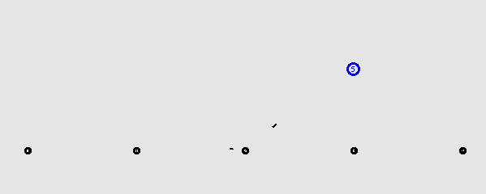
Above is one frame from the animation, with the mover node is almost (but not quite) directly over rownode(3), and so is close to losing contact with rownode(2). Two CBR packets can be seen en route; one has almost reached rownode(2) and one is about a third of the way from rownode(2) up to the blue mover node. The packets are not shown to scale; see exercise 17.
The tracefile is specific to wireless networking, and even without the use of use-newtrace has a rather different format from the link-based simulations earlier. The newtrace format begins with a letter for send/receive/drop/forward; after that, each logged attribute is identified with a prefixed tag rather than by position. Full details can be found in the ns-2 manual. Here is an edited record of the first packet drop (the initial d indicates a drop-event record):
d -t 22.586212333 -Hs 0 -Hd 5 ... -Nl RTR -Nw CBK ... -Ii 1100 ... -Pn cbr -Pi 1100 ...
The -t tag indicates the time. The -Hs and -Hd tags indicate the source and destination, respectively. The -Nl tag indicates the “level” (RouTeR) at which the loss was logged, and the -Nw tag indicates the cause: CBK, for “CallBacK”, means that the packet loss was detected at the link layer but the information was passed up to the routing layer. The -Ii tag is the packet’s unique serial number, and the P tags supply information about the constant-bit-rate agent.
We can use the tracefile to find clusters of drops beginning at times 22.586, 47.575, 72.707 and 97.540, corresponding roughly to the times when the route used to reach the $mover node shifts to passing through one more bottom-row node. Between t=72.707 and t=97.540 there are several other somewhat more mysterious clusters of drops; some of these clusters may be related to ordinary queue overflow but others may reflect decreasing reliability of the forwarding mechanism as the path grows longer.
31.7 Epilog¶
Simulations using ns (either ns-2 or ns-3) are a central part of networks research. Most scientific papers addressing comparisons between TCP flavors refer to ns simulations to at least some degree; ns is also widely used for non-TCP research (especially wireless).
But simulations are seldom a matter of a small number of runs. New protocols must be tested in a wide range of conditions, with varying bandwidths, delays and levels of background traffic. Head-to-head comparisons in isolation, such as our first runs in 31.3.3 Unequal Delays, can be very misleading. Good simulation design, in other words, is not easy.
Our simulations here involved extremely simple networks. A great deal of effort has been expended by the ns community in the past decade to create simulations involving much larger sets of nodes; the ultimate goal is to create realistic simulations of the Internet itself. We refer the interested reader to [FP01].
31.8 Exercises¶
1.0. In the graph in 31.2.1 Graph of cwnd v time, examine the trace file to see what accounts for the dot at the start of each tooth (at times approximately 4.1, 6.1 and 8.0). Note that the solid parts of the graph are as solid as they are because fractional cwnd values are used; cwnd is incremented by 1/cwnd on receipt of each ACK.
2.0. A problem with the single-sender link-utilization experiment at 31.2.6 Single-sender Throughput Experiments was that the smallest practical value for queue-limit was 3, which is 10% of the path transit capacity. Repeat the experiment but arrange for the path transit capacity to be at least 100 packets, making a queue-limit of 3 much smaller proportionally. Be sure the simulation runs long enough that it includes multiple teeth. What link utilization do you get? Also try queue-limit values of 4 and 5.
3.0. Create a single-sender simulation in which the path transit capacity is 90 packets, and the bottleneck queue-limit is 30. This should mean cwnd varies between 60 and 120. Be sure the simulation runs long enough that it includes many teeth.
- What link utilization do you observe?
- What queue utilization do you observe?
4.0. Use the basic2 model with equal propagation delays (delayB = 0), but delay the starting time for the first connection. Let this delay time be startdelay0; at the end of the basic2.tcl file, you will have
$ns at $startdelay0 "$ftp0 start"
Try this for startdelay0 ranging from 0 to 40 ms, in increments of 1.0 ms. Graph the ratio1 or ratio2 values as a function of startdelay0. Do you get a graph like the one in 31.3.4.2 Two-sender phase effects?
5.0. If the bottleneck link forwards at 10 ms/packet (bottleneckBW = 0.8), then in 300 seconds we can send 30,000 packets. What percentage of this, total, are sent by two competing senders as in 31.3 Two TCP Senders Competing, for delayB = 0, 50, 100, 200 and 400.
6.0. Repeat the previous exercise for bottleneckBW = 8.0, that is, a bottleneck rate of 1 ms/packet.
7.0. Pick a case above where the total is less than 100%. Write a script that keeps track of cwnd0 + cwnd1, and measure how much time this quantity is less than the transit capacity. What is the average of cwnd0 + cwnd1 over those periods when it is less than the transit capacity?
8.0. In the model of 31.3 Two TCP Senders Competing, it is often the case that for small delayB, eg delayB < 5, the longer-path B–D connection has greater throughput. Demonstrate this. Use an appropriate value of overhead (eg 0.02 or 0.002).
9.0. In generating the first graph in 31.3.7 Phase Effects and telnet traffic, we used a packetSize_ of 210 bytes, for an actualSize of 250 bytes. Generate a similar graph using in the simulations a much smaller value of packetSize_, eg 10 or 20 bytes. Note that for a given value of tndensity, as the actualSize shrinks so should the tninterval.
10.0. In 31.3.7 Phase Effects and telnet traffic the telnet connections ran from A and B to D, so the telnet traffic competed with the bulk ftp traffic on the bottleneck link. Change the simulation so the telnet traffic runs only as far as R. The variable tndensity should now represent the fraction of the A–R and B–R bandwidth that is used for telnet. Try values for tndensity of from 5% to 50% (note these densities are quite high). Generate a graph like the first graph in 31.3.7 Phase Effects and telnet traffic, illustrating whether this form of telnet traffic is effective at reducing phase effects.
11.0 Again using the telnet simulation of the previous exercise, in which the telnet traffic runs only as far as R, generate a graph comparing ratio1 for the bulk ftp traffic when randomization comes from:
overheadvalues in the range discussed in the text (eg 0.01 or 0.02 forbottleneckBW= 0.8 Mbps)- A–R and B–R telnet traffic with
tndensityin the range 5% to 50%.
The goal should be a graph comparable to that of 31.3.8 overhead versus telnet. Do the two randomization mechanisms – overhead and telnet – still yield comparable values for ratio1?
12.0. Repeat the same experiment as in exercise 8.0, but using telnet instead of overhead. Try it with A–D/B–D telnet traffic and tndensity around 1%, and also A–R/B–R traffic as in exercise 10.0 with a tndensity around 10%. The effect may be even more marked.
13.0. Analyze the packet drops for each flow for the Reno-versus-Vegas competition shown in the second graph (red v green) of 31.5 TCP Reno versus TCP Vegas. In that simulation, bottleneckBW = 8.0 Mbps, delayB = 0, queuesize = 20, 𝛼=3 and 𝛽=6; the full simulation ran for 1000 seconds.
Use a drop-cluster granularity of 2.0 seconds.
14.0. Generate a cwnd-versus-time graph for TCP Reno versus TCP Vegas, like the second graph in 31.5 TCP Reno versus TCP Vegas, except using the default 𝛼=1. Does the TCP Vegas connection perform better or worse?
15.0. Compare two TCP Vegas connections as in 31.3 Two TCP Senders Competing, for delayB varying from 0 to 400 (perhaps in steps of about 20). Use bottleneckBW = 8 Mbps, and run the simulations for at least 1000 seconds. Use the default 𝛼 and 𝛽 (usually 𝛼=1 and 𝛽=3). Is ratio1 ≃ 1 or ratio2 ≃ 1 a better fit? How does the overall fairness compare with what ratio1 ≃ 1 or ratio2 ≃ 1 would predict? Does either ratio appear roughly constant? If so, what is its value?
16.0. Repeat the previous exercise for a much larger value of 𝛼, say 𝛼=10. Set 𝛽=𝛼+2, and be sure queuesize is larger than 2𝛽 (recall that, in ns, 𝛼 is v_alpha_ and 𝛽 is v_beta_). If both connections manage to keep the same number of packets in the bottleneck queue at R, then both should get about the same goodput, by the queue-competition rule of 20.2.2 Example 2: router competition. Do they? Is the fairness situation better or worse than with the default 𝛼 and 𝛽?
17.0. In nam animations involving point-to-point links, packet lengths are displayed proportionally: if a link has a propagation delay of 10 ms and a bandwidth of 1 packet/ms, then each packet will be displayed with length 1/10 the link length. Is this true of wireless as well? Consider the animation (and single displayed frame) of 31.6 Wireless Simulation. Assume the signal propagation speed is c ≃ 300 m/µsec, that the nodes are 300 m apart, and that the bandwidth is 1 Mbps.